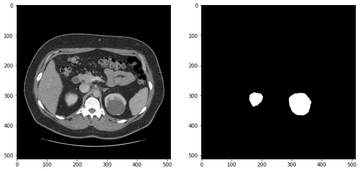
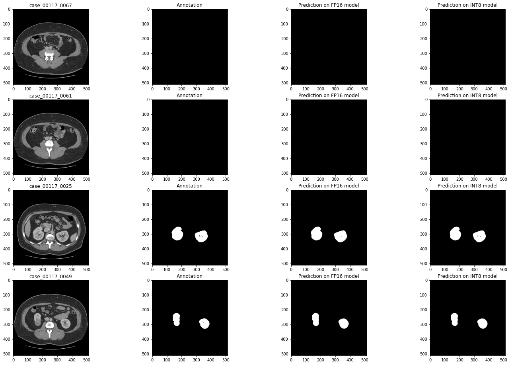
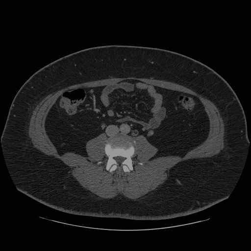

<!DOCTYPE html>

<html lang="en">
  <head>
    <meta charset="utf-8" />
    <meta name="viewport" content="width=device-width, initial-scale=1.0" /><meta name="generator" content="Docutils 0.17.1: http://docutils.sourceforge.net/" />

    <title>Quantize a Segmentation Model and Show Live Inference &#8212; OpenVINO™  documentation</title>
    
    
  <link href="../_static/css/theme.css" rel="stylesheet">
  <link href="../_static/css/index.ff1ffe594081f20da1ef19478df9384b.css" rel="stylesheet">

    
  <link rel="stylesheet"
    href="../_static/vendor/fontawesome/5.13.0/css/all.min.css">
  <link rel="preload" as="font" type="font/woff2" crossorigin
    href="../_static/vendor/fontawesome/5.13.0/webfonts/fa-solid-900.woff2">
  <link rel="preload" as="font" type="font/woff2" crossorigin
    href="../_static/vendor/fontawesome/5.13.0/webfonts/fa-brands-400.woff2">

    
      

    
    <link rel="stylesheet" type="text/css" href="../_static/pygments.css" />
    <link rel="stylesheet" type="text/css" href="../_static/css/blank.css" />
    <link rel="stylesheet" type="text/css" href="../_static/tabs.css" />
    <link rel="stylesheet" type="text/css" href="../_static/copybutton.css" />
    <link rel="stylesheet" type="text/css" href="../_static/mystnb.css" />
    <link rel="stylesheet" type="text/css" href="../_static/togglebutton.css" />
    <link rel="stylesheet" type="text/css" href="../_static/panels-main.c949a650a448cc0ae9fd3441c0e17fb0.css" />
    <link rel="stylesheet" type="text/css" href="../_static/panels-variables.06eb56fa6e07937060861dad626602ad.css" />
    <link rel="stylesheet" type="text/css" href="../_static/doxyrest-pygments.css" />
    
  <link rel="preload" as="script" href="../_static/js/index.be7d3bbb2ef33a8344ce.js">

    <link href="../_static/css/media/favicon.ico" rel="shortcut icon">
    <link rel="stylesheet" href="../_static/css/openvino_sphinx_theme.css" type="text/css" />
    <link rel="stylesheet" href="../_static/css/button.css" type="text/css" />
    <link rel="stylesheet" href="../_static/css/input.css" type="text/css" />
    <link rel="stylesheet" href="../_static/css/textfield.css" type="text/css" />
    <link rel="stylesheet" href="../_static/css/tabs.css" type="text/css" />
    <script src="../_static/js/openvino_sphinx_theme.js"></script>
    <link rel="stylesheet" href="../_static/css/viewer.min.css" type="text/css" />
    <link rel="stylesheet" href="../_static/css/custom.css" type="text/css" />

    <script src="https://cdn.jsdelivr.net/npm/chart.js@2.9.3/dist/Chart.min.js"></script>
    <script src="https://cdn.jsdelivr.net/npm/chartjs-plugin-datalabels"></script>
    <script src="https://cdnjs.cloudflare.com/ajax/libs/chartjs-plugin-annotation/0.5.7/chartjs-plugin-annotation.min.js"></script>
    <script src="https://cdn.jsdelivr.net/npm/chartjs-plugin-barchart-background@1.3.0/build/Plugin.Barchart.Background.min.js"></script>
    <script src="https://cdn.jsdelivr.net/npm/chartjs-plugin-deferred@1"></script>
    <script src="https://cdnjs.cloudflare.com/ajax/libs/PapaParse/5.3.1/papaparse.min.js"></script>
    <script src="../_static/js/viewer.min.js"></script>
    <script src="/assets/versions_raw.js"></script>

    <script data-url_root="../" id="documentation_options" src="../_static/documentation_options.js"></script>
    <script src="../_static/jquery.js"></script>
    <script src="../_static/underscore.js"></script>
    <script src="../_static/doctools.js"></script>
    <script src="../_static/tabs.js"></script>
    <script src="../_static/clipboard.min.js"></script>
    <script src="../_static/copybutton.js"></script>
    <script src="../_static/js/custom.js"></script>
    <script src="../_static/js/graphs.js"></script>
    <script src="../_static/js/graphs_ov_tf.js"></script>
    <script>let toggleHintShow = 'Click to show';</script>
    <script>let toggleHintHide = 'Click to hide';</script>
    <script>let toggleOpenOnPrint = 'true';</script>
    <script src="../_static/togglebutton.js"></script>
    <script src="../_static/target-highlight.js"></script>
    <script>var togglebuttonSelector = '.toggle, .admonition.dropdown, .tag_hide_input div.cell_input, .tag_hide-input div.cell_input, .tag_hide_output div.cell_output, .tag_hide-output div.cell_output, .tag_hide_cell.cell, .tag_hide-cell.cell';</script>
    <link rel="canonical" href="https://docs.openvino.ai/latest/notebooks/110-ct-segmentation-quantize-with-output.html" />
    <link rel="shortcut icon" href="../_static/favicon.ico"/>
    <link rel="index" title="Index" href="../genindex.html" />
    <link rel="search" title="Search" href="../search.html" />
    <link rel="next" title="Object Detection Quantization" href="111-detection-quantization-with-output.html" />
    <link rel="prev" title="Automatic Device Selection with OpenVINO™" href="106-auto-device-with-output.html" />
    <meta name="viewport" content="width=device-width, initial-scale=1" />
    <meta name="docsearch:language" content="en">
    

    <!-- Google Analytics -->
    
  </head>
  <body data-spy="scroll" data-target="#bd-toc-nav" data-offset="80">
    
    <div class="container-fluid" id="banner"></div>

    
      <nav class="navbar navbar-light navbar-expand-lg bg-light fixed-top bd-navbar" id="navbar-main"><div class="container-xl">

  <div id="navbar-start">
    
    

<a class="navbar-brand" href="../index.html">
  
</a>


    
  </div>

  <button class="navbar-toggler" type="button" data-toggle="collapse" data-target="#navbar-collapsible" aria-controls="navbar-collapsible" aria-expanded="false" aria-label="Toggle navigation">
    <span class="navbar-toggler-icon"></span>
  </button>

  
  <div id="navbar-collapsible" class="col-lg-9 collapse navbar-collapse">
    <div id="navbar-center" class="mr-auto">
      
      <div class="navbar-center-item">
        <ul id="navbar-main-elements" class="navbar-nav">
    <li class="toctree-l1 nav-item">
 <a class="reference internal nav-link" href="../pages/get_started.html">
  Get Started
 </a>
</li>

<li class="toctree-l1 nav-item">
 <a class="reference internal nav-link" href="../pages/documentation.html">
  Documentation
 </a>
</li>

<li class="toctree-l1 nav-item">
 <a class="reference internal nav-link" href="../tutorials.html">
  Tutorials
 </a>
</li>

<li class="toctree-l1 nav-item">
 <a class="reference internal nav-link" href="../api/api_reference.html">
  API Reference
 </a>
</li>

<li class="toctree-l1 nav-item">
 <a class="reference internal nav-link" href="../model_zoo.html">
  Model Zoo
 </a>
</li>

<li class="toctree-l1 nav-item">
 <a class="reference internal nav-link" href="../pages/resources.html">
  Resources
 </a>
</li>

    
</ul>
      </div>
      
    </div>

    <div id="navbar-end">
      
      <div class="navbar-end-item">
        <ul id="navbar-icon-links" class="navbar-nav" aria-label="Icon Links">
        <li class="nav-item">
          <a class="nav-link" href="https://github.com/openvinotoolkit/openvino" rel="noopener" target="_blank" title="GitHub">
            <span><i class="sst-github"></i></span>
            <label class="sr-only">GitHub</label>
          </a>
        </li>
</ul>
      </div>
      
      <div class="navbar-end-item">
        
<div class="dropdown sst-dropdown sst-dropdown-navbar">
  <button class="btn sst-btn dropdown-toggle" type="button" id="version-selector" data-toggle="dropdown" aria-haspopup="true" aria-expanded="false"></button>
  <div class="dropdown-menu" aria-labelledby="version-selector">
  </div>
</div>
      </div>
      
      <div class="navbar-end-item">
        

<div class="dropdown sst-dropdown sst-dropdown-navbar">
  <button class="btn sst-btn dropdown-toggle" type="button" id="language-selector" data-toggle="dropdown" aria-haspopup="true" aria-expanded="false">English</button>
  <div class="dropdown-menu" aria-labelledby="language-selector">
    
      
        <a class="dropdown-item font-weight-bold" href="/latest/notebooks/110-ct-segmentation-quantize-with-output.html">English</a>
      
    
      
        <a  class="dropdown-item" href="/cn/latest/notebooks/110-ct-segmentation-quantize-with-output.html">Chinese</a>
      
    
  </div>
</div>

      </div>
      
    </div>
  </div>
</div>
        <div id="collapse-nav-wrapper" class="container-xl">
          <button id="collapse-nav" class="button bttn-prm button-size-m" type="button" data-toggle="collapse" data-target="#nav-tree" aria-expanded="false" aria-controls="nav-tree">
            Documentation navigation <i class="fas fa-chevron-down"></i>
          </button>
        </div>
      </nav>
      <div class="transition-banner container-fluid alert alert-info alert-dismissible fade show" role="alert">
        <p>OpenVINO 2022.1 introduces a new version of OpenVINO API (API 2.0). For more information on the changes and transition steps, see the <a href="https://docs.openvino.ai/latest/openvino_2_0_transition_guide.html">transition guide</a></p>
        <button type="button" class="close" data-dismiss="alert" aria-label="Close">
          <span aria-hidden="true">&times;</span>
        </button>
    </div>
    

    <div class="container-xl">
      <div class="row">
          
            
            <!-- Only show if we have sidebars configured, else just a small margin  -->
            <div class="col-12 col-md-3 bd-sidebar" id="nav-tree"><form class="searchForm bd-search d-flex align-items-center" action="../search.html" method="get">
    <i class="icon fas fa-search"></i>
    <input type="search" class="form-control" name="query" id="search-input" placeholder="Search the docs ..." aria-label="Search the docs ..." autocomplete="off" >
</form><nav class="bd-links" id="bd-docs-nav" aria-label="Main navigation">
  <div class="bd-toc-item active">
    <ul class="nav bd-sidenav">
 <li class="toctree-l1">
  <a class="reference internal" href="001-hello-world-with-output.html">
   Hello Image Classification
  </a>
 </li>
 <li class="toctree-l1">
  <a class="reference internal" href="002-openvino-api-with-output.html">
   OpenVINO API Tutorial
  </a>
 </li>
 <li class="toctree-l1">
  <a class="reference internal" href="003-hello-segmentation-with-output.html">
   Hello Image Segmentation
  </a>
 </li>
 <li class="toctree-l1">
  <a class="reference internal" href="004-hello-detection-with-output.html">
   Hello Object Detection
  </a>
 </li>
</ul>
<ul class="current nav bd-sidenav">
 <li class="toctree-l1">
  <a class="reference internal" href="101-tensorflow-to-openvino-with-output.html">
   Convert a TensorFlow Model to OpenVINO
  </a>
 </li>
 <li class="toctree-l1">
  <a class="reference internal" href="102-pytorch-onnx-to-openvino-with-output.html">
   Convert a PyTorch Model to ONNX and OpenVINO IR
  </a>
 </li>
 <li class="toctree-l1">
  <a class="reference internal" href="103-paddle-onnx-to-openvino-classification-with-output.html">
   Convert a PaddlePaddle Model to ONNX and OpenVINO IR
  </a>
 </li>
 <li class="toctree-l1">
  <a class="reference internal" href="104-model-tools-with-output.html">
   Working with Open Model Zoo Models
  </a>
 </li>
 <li class="toctree-l1">
  <a class="reference internal" href="105-language-quantize-bert-with-output.html">
   Quantize NLP models with OpenVINO Post-Training Optimization Tool ​
  </a>
 </li>
 <li class="toctree-l1">
  <a class="reference internal" href="106-auto-device-with-output.html">
   Automatic Device Selection with OpenVINO™
  </a>
 </li>
 <li class="toctree-l1 current active">
  <a class="current reference internal" href="#">
   Quantize a Segmentation Model and Show Live Inference
  </a>
 </li>
 <li class="toctree-l1">
  <a class="reference internal" href="111-detection-quantization-with-output.html">
   Object Detection Quantization
  </a>
 </li>
 <li class="toctree-l1">
  <a class="reference internal" href="112-pytorch-post-training-quantization-nncf-with-output.html">
   Post-Training Quantization of PyTorch models with NNCF
  </a>
 </li>
 <li class="toctree-l1">
  <a class="reference internal" href="113-image-classification-quantization-with-output.html">
   Quantization of Image Classification Models
  </a>
 </li>
 <li class="toctree-l1">
  <a class="reference internal" href="114-quantization-simplified-mode-with-output.html">
   INT8 Quantization with Post-training Optimization Tool (POT) in Simplified Mode tutorial
  </a>
 </li>
</ul>
<ul class="nav bd-sidenav">
 <li class="toctree-l1">
  <a class="reference internal" href="201-vision-monodepth-with-output.html">
   Monodepth Estimation with OpenVINO
  </a>
 </li>
 <li class="toctree-l1">
  <a class="reference internal" href="202-vision-superresolution-image-with-output.html">
   Single Image Super Resolution with OpenVINO
  </a>
 </li>
 <li class="toctree-l1">
  <a class="reference internal" href="202-vision-superresolution-video-with-output.html">
   Video Super Resolution with OpenVINO
  </a>
 </li>
 <li class="toctree-l1">
  <a class="reference internal" href="205-vision-background-removal-with-output.html">
   Image Background Removal with U^2-Net and OpenVINO
  </a>
 </li>
 <li class="toctree-l1">
  <a class="reference internal" href="206-vision-paddlegan-anime-with-output.html">
   Photos to Anime with PaddleGAN and OpenVINO
  </a>
 </li>
 <li class="toctree-l1">
  <a class="reference internal" href="207-vision-paddlegan-superresolution-with-output.html">
   Super Resolution with PaddleGAN and OpenVINO
  </a>
 </li>
 <li class="toctree-l1">
  <a class="reference internal" href="208-optical-character-recognition-with-output.html">
   Optical Character Recognition (OCR) with OpenVINO
  </a>
 </li>
 <li class="toctree-l1">
  <a class="reference internal" href="209-handwritten-ocr-with-output.html">
   Handwritten Chinese and Japanese OCR
  </a>
 </li>
 <li class="toctree-l1">
  <a class="reference internal" href="210-ct-scan-live-inference-with-output.html">
   Live Inference and Benchmark CT-scan Data with OpenVINO
  </a>
 </li>
 <li class="toctree-l1">
  <a class="reference internal" href="211-speech-to-text-with-output.html">
   Speech to Text with OpenVINO
  </a>
 </li>
 <li class="toctree-l1">
  <a class="reference internal" href="212-onnx-style-transfer-with-output.html">
   Style Transfer on ONNX Models with OpenVINO
  </a>
 </li>
 <li class="toctree-l1">
  <a class="reference internal" href="213-question-answering-with-output.html">
   Interactive question answering with OpenVINO
  </a>
 </li>
 <li class="toctree-l1">
  <a class="reference internal" href="214-vision-paddle-classification-with-output.html">
   PaddlePaddle Image Classification with OpenVINO
  </a>
 </li>
 <li class="toctree-l1">
  <a class="reference internal" href="215-image-inpainting-with-output.html">
   Image In-painting with OpenVINO™
  </a>
 </li>
 <li class="toctree-l1">
  <a class="reference internal" href="217-vision-deblur-with-output.html">
   Deblur Photos with DeblurGAN-v2 and OpenVINO
  </a>
 </li>
 <li class="toctree-l1">
  <a class="reference internal" href="218-vehicle-detection-and-recognition-with-output.html">
   Vehicle Detection And Recognition with OpenVINO
  </a>
 </li>
</ul>
<ul class="nav bd-sidenav">
 <li class="toctree-l1">
  <a class="reference internal" href="301-tensorflow-training-openvino-with-output.html">
   From Training to Deployment with TensorFlow and OpenVINO
  </a>
 </li>
 <li class="toctree-l1">
  <a class="reference internal" href="301-tensorflow-training-openvino-pot-with-output.html">
   Post-Training Quantization with TensorFlow Classification Model
  </a>
 </li>
 <li class="toctree-l1">
  <a class="reference internal" href="302-pytorch-quantization-aware-training-with-output.html">
   Quantization Aware Training with NNCF, using PyTorch framework
  </a>
 </li>
 <li class="toctree-l1">
  <a class="reference internal" href="305-tensorflow-quantization-aware-training-with-output.html">
   Quantization Aware Training with NNCF, using TensorFlow Framework
  </a>
 </li>
</ul>
<ul class="nav bd-sidenav">
 <li class="toctree-l1">
  <a class="reference internal" href="401-object-detection-with-output.html">
   Live Object Detection with OpenVINO
  </a>
 </li>
 <li class="toctree-l1">
  <a class="reference internal" href="402-pose-estimation-with-output.html">
   Live Human Pose Estimation with OpenVINO
  </a>
 </li>
 <li class="toctree-l1">
  <a class="reference internal" href="403-action-recognition-webcam-with-output.html">
   Human Action Recognition with OpenVINO
  </a>
 </li>
 <li class="toctree-l1">
  <a class="reference internal" href="405-paddle-ocr-webcam-with-output.html">
   PaddleOCR with OpenVINO
  </a>
 </li>
</ul>

  </div>
</nav>
            </div>
            
          

          
          <div class="d-none d-xl-block col-xl-2 bd-toc">
            
              
              <div class="toc-item">
                
<div class="tocsection onthispage pt-5 pb-3">
    <i class="fas fa-list"></i> On this page
</div>

<nav id="bd-toc-nav">
    <ul class="visible nav section-nav flex-column">
 <li class="toc-h2 nav-item toc-entry">
  <a class="reference internal nav-link" href="#kidney-segmentation-with-pytorch-lightning-and-openvino-part-3">
   Kidney Segmentation with PyTorch Lightning and OpenVINO™ - Part 3
  </a>
 </li>
 <li class="toc-h2 nav-item toc-entry">
  <a class="reference internal nav-link" href="#instructions">
   Instructions
  </a>
 </li>
 <li class="toc-h2 nav-item toc-entry">
  <a class="reference internal nav-link" href="#imports">
   Imports
  </a>
 </li>
 <li class="toc-h2 nav-item toc-entry">
  <a class="reference internal nav-link" href="#settings">
   Settings
  </a>
 </li>
 <li class="toc-h2 nav-item toc-entry">
  <a class="reference internal nav-link" href="#download-ct-scan-data">
   Download CT-scan Data
  </a>
 </li>
 <li class="toc-h2 nav-item toc-entry">
  <a class="reference internal nav-link" href="#convert-model-to-openvino-ir">
   Convert Model to OpenVINO IR
  </a>
 </li>
 <li class="toc-h2 nav-item toc-entry">
  <a class="reference internal nav-link" href="#post-training-optimization-tool-pot-quantization">
   Post-Training Optimization Tool (POT) Quantization
  </a>
  <ul class="nav section-nav flex-column">
   <li class="toc-h3 nav-item toc-entry">
    <a class="reference internal nav-link" href="#configuration">
     Configuration
    </a>
    <ul class="nav section-nav flex-column">
     <li class="toc-h4 nav-item toc-entry">
      <a class="reference internal nav-link" href="#metric">
       Metric
      </a>
     </li>
     <li class="toc-h4 nav-item toc-entry">
      <a class="reference internal nav-link" href="#dataset">
       Dataset
      </a>
     </li>
     <li class="toc-h4 nav-item toc-entry">
      <a class="reference internal nav-link" href="#quantization-config">
       Quantization Config
      </a>
     </li>
    </ul>
   </li>
   <li class="toc-h3 nav-item toc-entry">
    <a class="reference internal nav-link" href="#run-quantization-pipeline">
     Run Quantization Pipeline
    </a>
   </li>
  </ul>
 </li>
 <li class="toc-h2 nav-item toc-entry">
  <a class="reference internal nav-link" href="#compare-metrics-of-fp16-and-int8-model">
   Compare Metrics of FP16 and INT8 Model
  </a>
 </li>
 <li class="toc-h2 nav-item toc-entry">
  <a class="reference internal nav-link" href="#compare-performance-of-the-original-and-quantized-models">
   Compare Performance of the Original and Quantized Models
  </a>
 </li>
 <li class="toc-h2 nav-item toc-entry">
  <a class="reference internal nav-link" href="#visually-compare-inference-results">
   Visually Compare Inference Results
  </a>
 </li>
 <li class="toc-h2 nav-item toc-entry">
  <a class="reference internal nav-link" href="#show-live-inference">
   Show Live Inference
  </a>
  <ul class="nav section-nav flex-column">
   <li class="toc-h3 nav-item toc-entry">
    <a class="reference internal nav-link" href="#load-model-and-list-of-image-files">
     Load Model and List of Image Files
    </a>
   </li>
   <li class="toc-h3 nav-item toc-entry">
    <a class="reference internal nav-link" href="#show-inference">
     Show Inference
    </a>
   </li>
  </ul>
 </li>
 <li class="toc-h2 nav-item toc-entry">
  <a class="reference internal nav-link" href="#references">
   References
  </a>
 </li>
</ul>

</nav>
              </div>
              
              <div class="toc-item">
                <div class="tocsection download-docs">
  <div class="dropdown sst-dropdown">
    <button class="button bttn-prm button-size-m" data-display="static" type="button" id="download-options"
      data-toggle="dropdown" aria-haspopup="true" aria-expanded="false">
      Download Docs
    </button>
    <div class="dropdown-menu" aria-labelledby="download-options">
      <a class="dropdown-item" href="#" onclick="window.print()">.pdf</a>
      <a id="download-zip-btn" class="dropdown-item" href="#">.zip</a>
    </div>
  </div>
</div>
              </div>
              
            
          </div>
          

          
          
              
          
          <main class="col-12 col-md-9 col-xl-7 py-md-5 pl-md-5 pr-md-4 bd-content" role="main">

<div class="tocsection editthispage">
    <a href="None">
        <i class="fas fa-pencil-alt"></i> Edit this page
    </a>
</div>

            
                <div>
                  
  <section id="quantize-a-segmentation-model-and-show-live-inference">
<h1>Quantize a Segmentation Model and Show Live Inference<a class="headerlink" href="#quantize-a-segmentation-model-and-show-live-inference" title="Permalink to this headline">¶</a></h1>
<section id="kidney-segmentation-with-pytorch-lightning-and-openvino-part-3">
<h2>Kidney Segmentation with PyTorch Lightning and OpenVINO™ - Part 3<a class="headerlink" href="#kidney-segmentation-with-pytorch-lightning-and-openvino-part-3" title="Permalink to this headline">¶</a></h2>
<p>This tutorial is part of a series on how to train, optimize, quantize
and show live inference on a medical segmentation model. The goal is to
accelerate inference on a kidney segmentation model. The
<a class="reference external" href="https://arxiv.org/abs/1505.04597">UNet</a> model is trained from
scratch; the data is from
<a class="reference external" href="https://github.com/neheller/kits19">Kits19</a>.</p>
<p>This third tutorial in the series shows how to:</p>
<ul class="simple">
<li><p>Convert an ONNX model to OpenVINO IR with <a class="reference external" href="https://docs.openvino.ai/latest/openvino_docs_MO_DG_Deep_Learning_Model_Optimizer_DevGuide.html">Model
Optimizer</a>,</p></li>
<li><p>Quantize a model with OpenVINO’s <a class="reference external" href="https://docs.openvino.ai/latest/pot_compression_api_README.html">Post-Training Optimization
Tool</a>
API.</p></li>
<li><p>Evaluate the F1 score metric of the original model and the quantized
model</p></li>
<li><p>Benchmark performance of the original model and the quantized model</p></li>
<li><p>Show live inference with OpenVINO’s async API and MULTI plugin</p></li>
</ul>
<p>All notebooks in this series:</p>
<ul class="simple">
<li><p><a class="reference external" href="data-preparation-ct-scan.ipynb">Data Preparation for 2D Segmentation of 3D Medical
Data</a></p></li>
<li><p><a class="reference external" href="pytorch-monai-training.ipynb">Train a 2D-UNet Medical Imaging Model with PyTorch
Lightning</a></p></li>
<li><p>Convert and Quantize a Segmentation Model and Show Live Inference
(this notebook)</p></li>
<li><p><a class="reference external" href="210-ct-scan-live-inference-with-output.html">Live Inference and Benchmark CT-scan
data</a></p></li>
</ul>
</section>
<section id="instructions">
<h2>Instructions<a class="headerlink" href="#instructions" title="Permalink to this headline">¶</a></h2>
<p>This notebook needs a trained UNet model that is converted to
<a class="reference external" href="https://github.com/onnx/onnx">ONNX</a> format. We provide a pretrained
model trained for 20 epochs with the full
<a class="reference external" href="https://github.com/neheller/kits19">Kits-19</a> frames dataset, which
has an F1 score on the validation set of 0.9. The training code is
available in <a class="reference external" href="pytorch-monai-training.ipynb">this notebook</a>.</p>
<p>Running this notebook with the full dataset will take a long time. For
demonstration purposes, this tutorial will download one converted CT
scan and use that scan for quantization and inference. For production
use, please use a larger dataset for more generalizable results.</p>
</section>
<section id="imports">
<h2>Imports<a class="headerlink" href="#imports" title="Permalink to this headline">¶</a></h2>
<p>The Post Training Optimization API is implemented in the <code class="docutils literal notranslate"><span class="pre">compression</span></code>
library.</p>
<div class="highlight-ipython3 notranslate"><div class="highlight"><pre><span></span><span class="kn">import</span> <span class="nn">os</span>
<span class="kn">import</span> <span class="nn">random</span>
<span class="kn">import</span> <span class="nn">sys</span>
<span class="kn">import</span> <span class="nn">time</span>
<span class="kn">import</span> <span class="nn">warnings</span>
<span class="kn">import</span> <span class="nn">zipfile</span>
<span class="kn">from</span> <span class="nn">pathlib</span> <span class="kn">import</span> <span class="n">Path</span>

<span class="n">warnings</span><span class="o">.</span><span class="n">filterwarnings</span><span class="p">(</span><span class="s2">&quot;ignore&quot;</span><span class="p">,</span> <span class="n">category</span><span class="o">=</span><span class="ne">UserWarning</span><span class="p">)</span>

<span class="kn">import</span> <span class="nn">cv2</span>
<span class="kn">import</span> <span class="nn">matplotlib.pyplot</span> <span class="k">as</span> <span class="nn">plt</span>
<span class="kn">import</span> <span class="nn">numpy</span> <span class="k">as</span> <span class="nn">np</span>
<span class="kn">from</span> <span class="nn">addict</span> <span class="kn">import</span> <span class="n">Dict</span>
<span class="kn">from</span> <span class="nn">compression.api</span> <span class="kn">import</span> <span class="n">DataLoader</span><span class="p">,</span> <span class="n">Metric</span>
<span class="kn">from</span> <span class="nn">compression.engines.ie_engine</span> <span class="kn">import</span> <span class="n">IEEngine</span>
<span class="kn">from</span> <span class="nn">compression.graph</span> <span class="kn">import</span> <span class="n">load_model</span><span class="p">,</span> <span class="n">save_model</span>
<span class="kn">from</span> <span class="nn">compression.graph.model_utils</span> <span class="kn">import</span> <span class="n">compress_model_weights</span>
<span class="kn">from</span> <span class="nn">compression.pipeline.initializer</span> <span class="kn">import</span> <span class="n">create_pipeline</span>
<span class="kn">from</span> <span class="nn">monai.transforms</span> <span class="kn">import</span> <span class="n">LoadImage</span>
<span class="kn">from</span> <span class="nn">openvino.inference_engine</span> <span class="kn">import</span> <span class="n">IECore</span>
<span class="kn">from</span> <span class="nn">yaspin</span> <span class="kn">import</span> <span class="n">yaspin</span>

<span class="n">sys</span><span class="o">.</span><span class="n">path</span><span class="o">.</span><span class="n">append</span><span class="p">(</span><span class="s2">&quot;../utils&quot;</span><span class="p">)</span>
<span class="kn">from</span> <span class="nn">models.custom_segmentation</span> <span class="kn">import</span> <span class="n">SegmentationModel</span>
<span class="kn">from</span> <span class="nn">notebook_utils</span> <span class="kn">import</span> <span class="n">benchmark_model</span><span class="p">,</span> <span class="n">download_file</span><span class="p">,</span> <span class="n">show_live_inference</span>
</pre></div>
</div>
</section>
<section id="settings">
<h2>Settings<a class="headerlink" href="#settings" title="Permalink to this headline">¶</a></h2>
<p>To use the pretrained models, set <code class="docutils literal notranslate"><span class="pre">ONNX_PATH</span></code> to
<code class="docutils literal notranslate"><span class="pre">&quot;pretrained_model/unet_kits19.onnx&quot;</span></code>. To use a model that you trained
or optimized yourself, adjust <code class="docutils literal notranslate"><span class="pre">ONNX_PATH</span></code>. Running the next cell will
check if a model trained in the <a class="reference external" href="pytorch-monai-training.ipynb">training
notebook</a> is saved in MODEL_DIR and if
so, use that. If there is no trained model, the pretrained model will be
used. The optimized OpenVINO Intermediate Representation (IR) model will
be saved in <code class="docutils literal notranslate"><span class="pre">MODEL_DIR</span></code>.</p>
<p>By default, this notebook will download one CT scan from the KITS19
dataset, and use that for quantization. To use the full dataset, set
<code class="docutils literal notranslate"><span class="pre">BASEDIR</span></code> to the path of the dataset, as prepared according to the
<a class="reference external" href="data-preparation-ct-scan.ipynb">Data Preparation</a> notebook.</p>
<div class="highlight-ipython3 notranslate"><div class="highlight"><pre><span></span><span class="n">BASEDIR</span> <span class="o">=</span> <span class="n">Path</span><span class="p">(</span><span class="s2">&quot;kits19_frames_1&quot;</span><span class="p">)</span>
<span class="c1"># Uncomment the line below to use the full dataset, as prepared in the data preparation notebook</span>
<span class="c1"># BASEDIR = Path(&quot;~/kits19/kits19_frames&quot;).expanduser()</span>
<span class="n">MODEL_DIR</span> <span class="o">=</span> <span class="n">Path</span><span class="p">(</span><span class="s2">&quot;model&quot;</span><span class="p">)</span>
<span class="n">ONNX_PATH</span> <span class="o">=</span> <span class="n">MODEL_DIR</span> <span class="o">/</span> <span class="s2">&quot;unet_kits19.onnx&quot;</span>
<span class="k">if</span> <span class="ow">not</span> <span class="n">ONNX_PATH</span><span class="o">.</span><span class="n">exists</span><span class="p">():</span>
    <span class="n">ONNX_PATH</span> <span class="o">=</span> <span class="n">Path</span><span class="p">(</span><span class="s2">&quot;pretrained_model/pretrained_unet_kits19.onnx&quot;</span><span class="p">)</span>
<span class="k">assert</span> <span class="n">ONNX_PATH</span><span class="o">.</span><span class="n">exists</span><span class="p">(),</span> <span class="sa">f</span><span class="s2">&quot;ONNX_PATH: </span><span class="si">{</span><span class="n">ONNX_PATH</span><span class="si">}</span><span class="s2"> does not exist&quot;</span>

<span class="n">ir_path</span> <span class="o">=</span> <span class="p">(</span><span class="n">MODEL_DIR</span> <span class="o">/</span> <span class="n">ONNX_PATH</span><span class="o">.</span><span class="n">stem</span><span class="p">)</span><span class="o">.</span><span class="n">with_suffix</span><span class="p">(</span><span class="s2">&quot;.xml&quot;</span><span class="p">)</span>

<span class="nb">print</span><span class="p">(</span><span class="sa">f</span><span class="s2">&quot;ONNX model: </span><span class="si">{</span><span class="n">ONNX_PATH</span><span class="si">}</span><span class="s2">&quot;</span><span class="p">)</span>
<span class="nb">print</span><span class="p">(</span><span class="sa">f</span><span class="s2">&quot;Optimized model will be saved to: </span><span class="si">{</span><span class="n">ir_path</span><span class="si">}</span><span class="s2">&quot;</span><span class="p">)</span>
</pre></div>
</div>
<div class="highlight-default notranslate"><div class="highlight"><pre><span></span><span class="n">ONNX</span> <span class="n">model</span><span class="p">:</span> <span class="n">pretrained_model</span><span class="o">/</span><span class="n">pretrained_unet_kits19</span><span class="o">.</span><span class="n">onnx</span>
<span class="n">Optimized</span> <span class="n">model</span> <span class="n">will</span> <span class="n">be</span> <span class="n">saved</span> <span class="n">to</span><span class="p">:</span> <span class="n">model</span><span class="o">/</span><span class="n">pretrained_unet_kits19</span><span class="o">.</span><span class="n">xml</span>
</pre></div>
</div>
</section>
<section id="download-ct-scan-data">
<h2>Download CT-scan Data<a class="headerlink" href="#download-ct-scan-data" title="Permalink to this headline">¶</a></h2>
<div class="highlight-ipython3 notranslate"><div class="highlight"><pre><span></span><span class="c1"># The CT scan case number. For example: 2 for data from the case_00002 directory</span>
<span class="c1"># Currently only 117 is supported</span>
<span class="n">CASE</span> <span class="o">=</span> <span class="mi">117</span>
<span class="k">if</span> <span class="ow">not</span> <span class="p">(</span><span class="n">BASEDIR</span> <span class="o">/</span> <span class="sa">f</span><span class="s2">&quot;case_</span><span class="si">{</span><span class="n">CASE</span><span class="si">:</span><span class="s2">05d</span><span class="si">}</span><span class="s2">&quot;</span><span class="p">)</span><span class="o">.</span><span class="n">exists</span><span class="p">():</span>
    <span class="n">BASEDIR</span><span class="o">.</span><span class="n">mkdir</span><span class="p">(</span><span class="n">exist_ok</span><span class="o">=</span><span class="kc">True</span><span class="p">)</span>
    <span class="n">filename</span> <span class="o">=</span> <span class="n">download_file</span><span class="p">(</span>
        <span class="sa">f</span><span class="s2">&quot;https://storage.openvinotoolkit.org/data/test_data/openvino_notebooks/kits19/case_</span><span class="si">{</span><span class="n">CASE</span><span class="si">:</span><span class="s2">05d</span><span class="si">}</span><span class="s2">.zip&quot;</span>
    <span class="p">)</span>
    <span class="k">with</span> <span class="n">zipfile</span><span class="o">.</span><span class="n">ZipFile</span><span class="p">(</span><span class="n">filename</span><span class="p">,</span> <span class="s2">&quot;r&quot;</span><span class="p">)</span> <span class="k">as</span> <span class="n">zip_ref</span><span class="p">:</span>
        <span class="n">zip_ref</span><span class="o">.</span><span class="n">extractall</span><span class="p">(</span><span class="n">path</span><span class="o">=</span><span class="n">BASEDIR</span><span class="p">)</span>
    <span class="n">os</span><span class="o">.</span><span class="n">remove</span><span class="p">(</span><span class="n">filename</span><span class="p">)</span>  <span class="c1"># remove zipfile</span>
    <span class="nb">print</span><span class="p">(</span><span class="sa">f</span><span class="s2">&quot;Downloaded and extracted data for case_</span><span class="si">{</span><span class="n">CASE</span><span class="si">:</span><span class="s2">05d</span><span class="si">}</span><span class="s2">&quot;</span><span class="p">)</span>
<span class="k">else</span><span class="p">:</span>
    <span class="nb">print</span><span class="p">(</span><span class="sa">f</span><span class="s2">&quot;Data for case_</span><span class="si">{</span><span class="n">CASE</span><span class="si">:</span><span class="s2">05d</span><span class="si">}</span><span class="s2"> exists&quot;</span><span class="p">)</span>
</pre></div>
</div>
<div class="highlight-default notranslate"><div class="highlight"><pre><span></span><span class="n">Data</span> <span class="k">for</span> <span class="n">case_00117</span> <span class="n">exists</span>
</pre></div>
</div>
</section>
<section id="convert-model-to-openvino-ir">
<h2>Convert Model to OpenVINO IR<a class="headerlink" href="#convert-model-to-openvino-ir" title="Permalink to this headline">¶</a></h2>
<p>Call the Model Optimizer tool to convert the ONNX model to OpenVINO IR,
with FP16 precision. The model files are saved to the MODEL_DIR
directory. See the <a class="reference external" href="https://docs.openvino.ai/latest/openvino_docs_MO_DG_Deep_Learning_Model_Optimizer_DevGuide.html">Model Optimizer Developer
Guide</a>
for more information.</p>
<p>Model Optimization was successful if the last lines of the output
include <code class="docutils literal notranslate"><span class="pre">[</span> <span class="pre">SUCCESS</span> <span class="pre">]</span> <span class="pre">Generated</span> <span class="pre">IR</span> <span class="pre">version</span> <span class="pre">10</span> <span class="pre">model</span></code>.</p>
<div class="highlight-ipython3 notranslate"><div class="highlight"><pre><span></span><span class="n">MODEL_DIR</span><span class="o">.</span><span class="n">mkdir</span><span class="p">(</span><span class="n">exist_ok</span><span class="o">=</span><span class="kc">True</span><span class="p">)</span>
<span class="o">!</span>mo --input_model <span class="nv">$ONNX_PATH</span> --output_dir <span class="nv">$MODEL_DIR</span> --data_type FP16
</pre></div>
</div>
<div class="highlight-default notranslate"><div class="highlight"><pre><span></span><span class="n">Model</span> <span class="n">Optimizer</span> <span class="n">arguments</span><span class="p">:</span>
<span class="n">Common</span> <span class="n">parameters</span><span class="p">:</span>
    <span class="o">-</span> <span class="n">Path</span> <span class="n">to</span> <span class="n">the</span> <span class="n">Input</span> <span class="n">Model</span><span class="p">:</span>  <span class="o">/</span><span class="n">home</span><span class="o">/</span><span class="n">runner</span><span class="o">/</span><span class="n">work</span><span class="o">/</span><span class="n">openvino_notebooks</span><span class="o">/</span><span class="n">openvino_notebooks</span><span class="o">/</span><span class="n">notebooks</span><span class="o">/</span><span class="mi">110</span><span class="o">-</span><span class="n">ct</span><span class="o">-</span><span class="n">segmentation</span><span class="o">-</span><span class="n">quantize</span><span class="o">/</span><span class="n">pretrained_model</span><span class="o">/</span><span class="n">pretrained_unet_kits19</span><span class="o">.</span><span class="n">onnx</span>
    <span class="o">-</span> <span class="n">Path</span> <span class="k">for</span> <span class="n">generated</span> <span class="n">IR</span><span class="p">:</span>    <span class="o">/</span><span class="n">home</span><span class="o">/</span><span class="n">runner</span><span class="o">/</span><span class="n">work</span><span class="o">/</span><span class="n">openvino_notebooks</span><span class="o">/</span><span class="n">openvino_notebooks</span><span class="o">/</span><span class="n">notebooks</span><span class="o">/</span><span class="mi">110</span><span class="o">-</span><span class="n">ct</span><span class="o">-</span><span class="n">segmentation</span><span class="o">-</span><span class="n">quantize</span><span class="o">/</span><span class="n">model</span>
    <span class="o">-</span> <span class="n">IR</span> <span class="n">output</span> <span class="n">name</span><span class="p">:</span>   <span class="n">pretrained_unet_kits19</span>
    <span class="o">-</span> <span class="n">Log</span> <span class="n">level</span><span class="p">:</span>    <span class="n">ERROR</span>
    <span class="o">-</span> <span class="n">Batch</span><span class="p">:</span>    <span class="n">Not</span> <span class="n">specified</span><span class="p">,</span> <span class="n">inherited</span> <span class="kn">from</span> <span class="nn">the</span> <span class="n">model</span>
    <span class="o">-</span> <span class="n">Input</span> <span class="n">layers</span><span class="p">:</span>     <span class="n">Not</span> <span class="n">specified</span><span class="p">,</span> <span class="n">inherited</span> <span class="kn">from</span> <span class="nn">the</span> <span class="n">model</span>
    <span class="o">-</span> <span class="n">Output</span> <span class="n">layers</span><span class="p">:</span>    <span class="n">Not</span> <span class="n">specified</span><span class="p">,</span> <span class="n">inherited</span> <span class="kn">from</span> <span class="nn">the</span> <span class="n">model</span>
    <span class="o">-</span> <span class="n">Input</span> <span class="n">shapes</span><span class="p">:</span>     <span class="n">Not</span> <span class="n">specified</span><span class="p">,</span> <span class="n">inherited</span> <span class="kn">from</span> <span class="nn">the</span> <span class="n">model</span>
    <span class="o">-</span> <span class="n">Source</span> <span class="n">layout</span><span class="p">:</span>    <span class="n">Not</span> <span class="n">specified</span>
    <span class="o">-</span> <span class="n">Target</span> <span class="n">layout</span><span class="p">:</span>    <span class="n">Not</span> <span class="n">specified</span>
    <span class="o">-</span> <span class="n">Layout</span><span class="p">:</span>   <span class="n">Not</span> <span class="n">specified</span>
    <span class="o">-</span> <span class="n">Mean</span> <span class="n">values</span><span class="p">:</span>  <span class="n">Not</span> <span class="n">specified</span>
    <span class="o">-</span> <span class="n">Scale</span> <span class="n">values</span><span class="p">:</span>     <span class="n">Not</span> <span class="n">specified</span>
    <span class="o">-</span> <span class="n">Scale</span> <span class="n">factor</span><span class="p">:</span>     <span class="n">Not</span> <span class="n">specified</span>
    <span class="o">-</span> <span class="n">Precision</span> <span class="n">of</span> <span class="n">IR</span><span class="p">:</span>  <span class="n">FP16</span>
    <span class="o">-</span> <span class="n">Enable</span> <span class="n">fusing</span><span class="p">:</span>    <span class="kc">True</span>
    <span class="o">-</span> <span class="n">User</span> <span class="n">transformations</span><span class="p">:</span>     <span class="n">Not</span> <span class="n">specified</span>
    <span class="o">-</span> <span class="n">Reverse</span> <span class="nb">input</span> <span class="n">channels</span><span class="p">:</span>   <span class="kc">False</span>
    <span class="o">-</span> <span class="n">Enable</span> <span class="n">IR</span> <span class="n">generation</span> <span class="k">for</span> <span class="n">fixed</span> <span class="nb">input</span> <span class="n">shape</span><span class="p">:</span>   <span class="kc">False</span>
    <span class="o">-</span> <span class="n">Use</span> <span class="n">the</span> <span class="n">transformations</span> <span class="n">config</span> <span class="n">file</span><span class="p">:</span>  <span class="kc">None</span>
<span class="n">Advanced</span> <span class="n">parameters</span><span class="p">:</span>
    <span class="o">-</span> <span class="n">Force</span> <span class="n">the</span> <span class="n">usage</span> <span class="n">of</span> <span class="n">legacy</span> <span class="n">Frontend</span> <span class="n">of</span> <span class="n">Model</span> <span class="n">Optimizer</span> <span class="k">for</span> <span class="n">model</span> <span class="n">conversion</span> <span class="n">into</span> <span class="n">IR</span><span class="p">:</span>   <span class="kc">False</span>
    <span class="o">-</span> <span class="n">Force</span> <span class="n">the</span> <span class="n">usage</span> <span class="n">of</span> <span class="n">new</span> <span class="n">Frontend</span> <span class="n">of</span> <span class="n">Model</span> <span class="n">Optimizer</span> <span class="k">for</span> <span class="n">model</span> <span class="n">conversion</span> <span class="n">into</span> <span class="n">IR</span><span class="p">:</span>  <span class="kc">False</span>
<span class="n">OpenVINO</span> <span class="n">runtime</span> <span class="n">found</span> <span class="ow">in</span><span class="p">:</span>  <span class="o">/</span><span class="n">opt</span><span class="o">/</span><span class="n">hostedtoolcache</span><span class="o">/</span><span class="n">Python</span><span class="o">/</span><span class="mf">3.8.12</span><span class="o">/</span><span class="n">x64</span><span class="o">/</span><span class="n">lib</span><span class="o">/</span><span class="n">python3</span><span class="mf">.8</span><span class="o">/</span><span class="n">site</span><span class="o">-</span><span class="n">packages</span><span class="o">/</span><span class="n">openvino</span>
<span class="n">OpenVINO</span> <span class="n">runtime</span> <span class="n">version</span><span class="p">:</span>   <span class="mf">2022.1.0</span><span class="o">-</span><span class="mi">7019</span><span class="o">-</span><span class="n">cdb9bec7210</span><span class="o">-</span><span class="n">releases</span><span class="o">/</span><span class="mi">2022</span><span class="o">/</span><span class="mi">1</span>
<span class="n">Model</span> <span class="n">Optimizer</span> <span class="n">version</span><span class="p">:</span>    <span class="mf">2022.1.0</span><span class="o">-</span><span class="mi">7019</span><span class="o">-</span><span class="n">cdb9bec7210</span><span class="o">-</span><span class="n">releases</span><span class="o">/</span><span class="mi">2022</span><span class="o">/</span><span class="mi">1</span>
<span class="p">[</span> <span class="n">SUCCESS</span> <span class="p">]</span> <span class="n">Generated</span> <span class="n">IR</span> <span class="n">version</span> <span class="mi">11</span> <span class="n">model</span><span class="o">.</span>
<span class="p">[</span> <span class="n">SUCCESS</span> <span class="p">]</span> <span class="n">XML</span> <span class="n">file</span><span class="p">:</span> <span class="o">/</span><span class="n">home</span><span class="o">/</span><span class="n">runner</span><span class="o">/</span><span class="n">work</span><span class="o">/</span><span class="n">openvino_notebooks</span><span class="o">/</span><span class="n">openvino_notebooks</span><span class="o">/</span><span class="n">notebooks</span><span class="o">/</span><span class="mi">110</span><span class="o">-</span><span class="n">ct</span><span class="o">-</span><span class="n">segmentation</span><span class="o">-</span><span class="n">quantize</span><span class="o">/</span><span class="n">model</span><span class="o">/</span><span class="n">pretrained_unet_kits19</span><span class="o">.</span><span class="n">xml</span>
<span class="p">[</span> <span class="n">SUCCESS</span> <span class="p">]</span> <span class="n">BIN</span> <span class="n">file</span><span class="p">:</span> <span class="o">/</span><span class="n">home</span><span class="o">/</span><span class="n">runner</span><span class="o">/</span><span class="n">work</span><span class="o">/</span><span class="n">openvino_notebooks</span><span class="o">/</span><span class="n">openvino_notebooks</span><span class="o">/</span><span class="n">notebooks</span><span class="o">/</span><span class="mi">110</span><span class="o">-</span><span class="n">ct</span><span class="o">-</span><span class="n">segmentation</span><span class="o">-</span><span class="n">quantize</span><span class="o">/</span><span class="n">model</span><span class="o">/</span><span class="n">pretrained_unet_kits19</span><span class="o">.</span><span class="n">bin</span>
<span class="p">[</span> <span class="n">SUCCESS</span> <span class="p">]</span> <span class="n">Total</span> <span class="n">execution</span> <span class="n">time</span><span class="p">:</span> <span class="mf">0.69</span> <span class="n">seconds</span><span class="o">.</span>
<span class="p">[</span> <span class="n">SUCCESS</span> <span class="p">]</span> <span class="n">Memory</span> <span class="n">consumed</span><span class="p">:</span> <span class="mi">83</span> <span class="n">MB</span><span class="o">.</span>
<span class="n">It</span><span class="s1">&#39;s been a while, check for a new version of Intel(R) Distribution of OpenVINO(TM) toolkit here https://software.intel.com/content/www/us/en/develop/tools/openvino-toolkit/download.html?cid=other&amp;source=prod&amp;campid=ww_2022_bu_IOTG_OpenVINO-2022-1&amp;content=upg_all&amp;medium=organic or on the GitHub*</span>
<span class="p">[</span> <span class="n">INFO</span> <span class="p">]</span> <span class="n">The</span> <span class="n">model</span> <span class="n">was</span> <span class="n">converted</span> <span class="n">to</span> <span class="n">IR</span> <span class="n">v11</span><span class="p">,</span> <span class="n">the</span> <span class="n">latest</span> <span class="n">model</span> <span class="nb">format</span> <span class="n">that</span> <span class="n">corresponds</span> <span class="n">to</span> <span class="n">the</span> <span class="n">source</span> <span class="n">DL</span> <span class="n">framework</span> <span class="nb">input</span><span class="o">/</span><span class="n">output</span> <span class="nb">format</span><span class="o">.</span> <span class="n">While</span> <span class="n">IR</span> <span class="n">v11</span> <span class="ow">is</span> <span class="n">backwards</span> <span class="n">compatible</span> <span class="k">with</span> <span class="n">OpenVINO</span> <span class="n">Inference</span> <span class="n">Engine</span> <span class="n">API</span> <span class="n">v1</span><span class="mf">.0</span><span class="p">,</span> <span class="n">please</span> <span class="n">use</span> <span class="n">API</span> <span class="n">v2</span><span class="mf">.0</span> <span class="p">(</span><span class="k">as</span> <span class="n">of</span> <span class="mf">2022.1</span><span class="p">)</span> <span class="n">to</span> <span class="n">take</span> <span class="n">advantage</span> <span class="n">of</span> <span class="n">the</span> <span class="n">latest</span> <span class="n">improvements</span> <span class="ow">in</span> <span class="n">IR</span> <span class="n">v11</span><span class="o">.</span>
<span class="n">Find</span> <span class="n">more</span> <span class="n">information</span> <span class="n">about</span> <span class="n">API</span> <span class="n">v2</span><span class="mf">.0</span> <span class="ow">and</span> <span class="n">IR</span> <span class="n">v11</span> <span class="n">at</span> <span class="n">https</span><span class="p">:</span><span class="o">//</span><span class="n">docs</span><span class="o">.</span><span class="n">openvino</span><span class="o">.</span><span class="n">ai</span>
</pre></div>
</div>
</section>
<section id="post-training-optimization-tool-pot-quantization">
<h2>Post-Training Optimization Tool (POT) Quantization<a class="headerlink" href="#post-training-optimization-tool-pot-quantization" title="Permalink to this headline">¶</a></h2>
<p>The Post-Training Optimization Tool (POT) <code class="docutils literal notranslate"><span class="pre">compression</span></code> API defines
base classes for <code class="docutils literal notranslate"><span class="pre">Metric</span></code> and <code class="docutils literal notranslate"><span class="pre">DataLoader</span></code>. In this notebook, we use
a custom Metric and DataLoader that show all the required methods.</p>
<section id="configuration">
<h3>Configuration<a class="headerlink" href="#configuration" title="Permalink to this headline">¶</a></h3>
<section id="metric">
<h4>Metric<a class="headerlink" href="#metric" title="Permalink to this headline">¶</a></h4>
<p>Define a metric to determine the performance of the model. For the
Default Quantization algorithm that is used in this tutorial, defining a
metric is optional. The metric is used to compare the quantized INT8
model with the original FP16 IR model.</p>
<p>A metric for POT inherits from <code class="docutils literal notranslate"><span class="pre">compression.api.Metric</span></code> and should
implement all the methods in this example.</p>
<p>For this demo, the <a class="reference external" href="https://en.wikipedia.org/wiki/F-score">F1 score</a>,
or Dice coefficient, is used. The same metric implementation is used in
the <a class="reference external" href="pytorch-monai-training.ipynb">training notebook</a>.</p>
<div class="highlight-ipython3 notranslate"><div class="highlight"><pre><span></span><span class="c1"># The sigmoid function is used to transform the result of the network</span>
<span class="c1"># to binary segmentation masks</span>
<span class="k">def</span> <span class="nf">sigmoid</span><span class="p">(</span><span class="n">x</span><span class="p">):</span>
    <span class="k">return</span> <span class="n">np</span><span class="o">.</span><span class="n">exp</span><span class="p">(</span><span class="o">-</span><span class="n">np</span><span class="o">.</span><span class="n">logaddexp</span><span class="p">(</span><span class="mi">0</span><span class="p">,</span> <span class="o">-</span><span class="n">x</span><span class="p">))</span>


<span class="k">class</span> <span class="nc">BinaryF1</span><span class="p">(</span><span class="n">Metric</span><span class="p">):</span>
    <span class="sd">&quot;&quot;&quot;</span>
<span class="sd">    Metric to compute F1/Dice score for binary segmentation. F1 is computed as</span>
<span class="sd">    (2 * precision * recall) / (precision + recall) where precision is computed as</span>
<span class="sd">    the ratio of pixels that were correctly predicted as true and all actual true pixels,</span>
<span class="sd">    and recall as the ratio of pixels that were correctly predicted as true and all</span>
<span class="sd">    predicted true pixels.</span>

<span class="sd">    See https://en.wikipedia.org/wiki/F-score</span>
<span class="sd">    &quot;&quot;&quot;</span>

    <span class="c1"># Required methods</span>
    <span class="k">def</span> <span class="fm">__init__</span><span class="p">(</span><span class="bp">self</span><span class="p">):</span>
        <span class="nb">super</span><span class="p">()</span><span class="o">.</span><span class="fm">__init__</span><span class="p">()</span>
        <span class="bp">self</span><span class="o">.</span><span class="n">_name</span> <span class="o">=</span> <span class="s2">&quot;F1&quot;</span>
        <span class="bp">self</span><span class="o">.</span><span class="n">y_true</span> <span class="o">=</span> <span class="mi">0</span>
        <span class="bp">self</span><span class="o">.</span><span class="n">y_pred</span> <span class="o">=</span> <span class="mi">0</span>
        <span class="bp">self</span><span class="o">.</span><span class="n">correct_true</span> <span class="o">=</span> <span class="mi">0</span>

    <span class="nd">@property</span>
    <span class="k">def</span> <span class="nf">value</span><span class="p">(</span><span class="bp">self</span><span class="p">):</span>
        <span class="sd">&quot;&quot;&quot;</span>
<span class="sd">        Returns metric value for the last model output.</span>
<span class="sd">        Possible format: {metric_name: [metric_values_per_image]}</span>
<span class="sd">        &quot;&quot;&quot;</span>
        <span class="k">return</span> <span class="p">{</span><span class="bp">self</span><span class="o">.</span><span class="n">_name</span><span class="p">:</span> <span class="p">[</span><span class="mi">0</span><span class="p">,</span> <span class="mi">0</span><span class="p">]}</span>

    <span class="nd">@property</span>
    <span class="k">def</span> <span class="nf">avg_value</span><span class="p">(</span><span class="bp">self</span><span class="p">):</span>
        <span class="sd">&quot;&quot;&quot;</span>
<span class="sd">        Returns average metric value for all model outputs as {metric_name: metric_value}</span>
<span class="sd">        &quot;&quot;&quot;</span>
        <span class="n">recall</span> <span class="o">=</span> <span class="bp">self</span><span class="o">.</span><span class="n">correct_true</span> <span class="o">/</span> <span class="bp">self</span><span class="o">.</span><span class="n">y_pred</span>
        <span class="n">precision</span> <span class="o">=</span> <span class="bp">self</span><span class="o">.</span><span class="n">correct_true</span> <span class="o">/</span> <span class="bp">self</span><span class="o">.</span><span class="n">y_true</span>

        <span class="n">f1</span> <span class="o">=</span> <span class="p">(</span><span class="mi">2</span> <span class="o">*</span> <span class="n">precision</span> <span class="o">*</span> <span class="n">recall</span><span class="p">)</span> <span class="o">/</span> <span class="p">(</span><span class="n">precision</span> <span class="o">+</span> <span class="n">recall</span><span class="p">)</span>
        <span class="k">return</span> <span class="p">{</span><span class="bp">self</span><span class="o">.</span><span class="n">_name</span><span class="p">:</span> <span class="n">f1</span><span class="p">}</span>

    <span class="k">def</span> <span class="nf">update</span><span class="p">(</span><span class="bp">self</span><span class="p">,</span> <span class="n">output</span><span class="p">,</span> <span class="n">target</span><span class="p">):</span>
        <span class="sd">&quot;&quot;&quot;</span>
<span class="sd">        Update the statistics for metric computation</span>

<span class="sd">        :param output: model output</span>
<span class="sd">        :param target: annotations for model output</span>
<span class="sd">        &quot;&quot;&quot;</span>
        <span class="n">label</span> <span class="o">=</span> <span class="n">target</span><span class="p">[</span><span class="mi">0</span><span class="p">]</span><span class="o">.</span><span class="n">astype</span><span class="p">(</span><span class="n">np</span><span class="o">.</span><span class="n">byte</span><span class="p">)</span>
        <span class="n">prediction</span> <span class="o">=</span> <span class="n">sigmoid</span><span class="p">(</span><span class="n">output</span><span class="p">[</span><span class="mi">0</span><span class="p">])</span><span class="o">.</span><span class="n">round</span><span class="p">()</span><span class="o">.</span><span class="n">astype</span><span class="p">(</span><span class="n">np</span><span class="o">.</span><span class="n">byte</span><span class="p">)</span>

        <span class="bp">self</span><span class="o">.</span><span class="n">y_true</span> <span class="o">+=</span> <span class="n">np</span><span class="o">.</span><span class="n">sum</span><span class="p">(</span><span class="n">label</span><span class="p">)</span>
        <span class="bp">self</span><span class="o">.</span><span class="n">y_pred</span> <span class="o">+=</span> <span class="n">np</span><span class="o">.</span><span class="n">sum</span><span class="p">(</span><span class="n">prediction</span><span class="p">)</span>

        <span class="n">correct_true</span> <span class="o">=</span> <span class="n">np</span><span class="o">.</span><span class="n">sum</span><span class="p">(</span>
            <span class="p">(</span><span class="n">label</span> <span class="o">==</span> <span class="n">prediction</span><span class="p">)</span><span class="o">.</span><span class="n">astype</span><span class="p">(</span><span class="n">np</span><span class="o">.</span><span class="n">byte</span><span class="p">)</span> <span class="o">*</span> <span class="p">(</span><span class="n">label</span> <span class="o">==</span> <span class="mi">1</span><span class="p">)</span><span class="o">.</span><span class="n">astype</span><span class="p">(</span><span class="n">np</span><span class="o">.</span><span class="n">byte</span><span class="p">)</span>
        <span class="p">)</span><span class="o">.</span><span class="n">astype</span><span class="p">(</span><span class="n">np</span><span class="o">.</span><span class="n">float32</span><span class="p">)</span>

        <span class="bp">self</span><span class="o">.</span><span class="n">correct_true</span> <span class="o">+=</span> <span class="n">correct_true</span>

    <span class="k">def</span> <span class="nf">reset</span><span class="p">(</span><span class="bp">self</span><span class="p">):</span>
        <span class="sd">&quot;&quot;&quot;</span>
<span class="sd">        Resets metric to initial values</span>
<span class="sd">        &quot;&quot;&quot;</span>
        <span class="bp">self</span><span class="o">.</span><span class="n">y_true</span> <span class="o">=</span> <span class="mi">0</span>
        <span class="bp">self</span><span class="o">.</span><span class="n">y_pred</span> <span class="o">=</span> <span class="mi">0</span>
        <span class="bp">self</span><span class="o">.</span><span class="n">correct_true</span> <span class="o">=</span> <span class="mi">0</span>

    <span class="k">def</span> <span class="nf">get_attributes</span><span class="p">(</span><span class="bp">self</span><span class="p">):</span>
        <span class="sd">&quot;&quot;&quot;</span>
<span class="sd">        Returns a dictionary of metric attributes {metric_name: {attribute_name: value}}.</span>
<span class="sd">        Required attributes: &#39;direction&#39;: &#39;higher-better&#39; or &#39;higher-worse&#39;</span>
<span class="sd">                             &#39;type&#39;: metric type</span>
<span class="sd">        &quot;&quot;&quot;</span>
        <span class="k">return</span> <span class="p">{</span><span class="bp">self</span><span class="o">.</span><span class="n">_name</span><span class="p">:</span> <span class="p">{</span><span class="s2">&quot;direction&quot;</span><span class="p">:</span> <span class="s2">&quot;higher-better&quot;</span><span class="p">,</span> <span class="s2">&quot;type&quot;</span><span class="p">:</span> <span class="s2">&quot;F1&quot;</span><span class="p">}}</span>
</pre></div>
</div>
</section>
<section id="dataset">
<h4>Dataset<a class="headerlink" href="#dataset" title="Permalink to this headline">¶</a></h4>
<p>The KitsDataLoader in the next cell expects images and masks in the
<em>basedir</em> directory, in a folder per patient. For more information about
the data in the dataset, see the <a class="reference external" href="data-preparation-cit-scan.ipynb">data preparation
notebook</a>. This dataset follows
POT’s <code class="docutils literal notranslate"><span class="pre">compression.api.DataLoader</span></code> interface, which should implement
<code class="docutils literal notranslate"><span class="pre">__init__</span></code>, <code class="docutils literal notranslate"><span class="pre">__getitem__</span></code> and <code class="docutils literal notranslate"><span class="pre">__len__</span></code>, where
<code class="docutils literal notranslate"><span class="pre">__getitem__(index)</span></code> returns <code class="docutils literal notranslate"><span class="pre">(annotion,</span> <span class="pre">image)</span></code> or
<code class="docutils literal notranslate"><span class="pre">(annotation,</span> <span class="pre">image,</span> <span class="pre">metadata)</span></code> and <code class="docutils literal notranslate"><span class="pre">annotation</span></code> consists of
<code class="docutils literal notranslate"><span class="pre">(index,</span> <span class="pre">label)</span></code>.</p>
<p>Images are loaded with MONAI’s
<code class="docutils literal notranslate"><span class="pre">`LoadImage</span></code> &lt;<a class="reference external" href="https://docs.monai.io/en/stable/transforms.html#loadimage">https://docs.monai.io/en/stable/transforms.html#loadimage</a>&gt;`__,
to align with the image loading method in the <a class="reference external" href="pytorch-monai-training.ipynb">training
notebook</a>. This method rotates and
flips the images. We define a <code class="docutils literal notranslate"><span class="pre">rotate_and_flip</span></code> method to display the
images in the expected orientation.</p>
<div class="highlight-ipython3 notranslate"><div class="highlight"><pre><span></span><span class="k">def</span> <span class="nf">rotate_and_flip</span><span class="p">(</span><span class="n">image</span><span class="p">):</span>
    <span class="sd">&quot;&quot;&quot;Rotate `image` by 90 degrees and flip horizontally&quot;&quot;&quot;</span>
    <span class="k">return</span> <span class="n">cv2</span><span class="o">.</span><span class="n">flip</span><span class="p">(</span><span class="n">cv2</span><span class="o">.</span><span class="n">rotate</span><span class="p">(</span><span class="n">image</span><span class="p">,</span> <span class="n">rotateCode</span><span class="o">=</span><span class="n">cv2</span><span class="o">.</span><span class="n">ROTATE_90_CLOCKWISE</span><span class="p">),</span> <span class="n">flipCode</span><span class="o">=</span><span class="mi">1</span><span class="p">)</span>


<span class="k">class</span> <span class="nc">KitsDataLoader</span><span class="p">(</span><span class="n">DataLoader</span><span class="p">):</span>
    <span class="k">def</span> <span class="fm">__init__</span><span class="p">(</span><span class="bp">self</span><span class="p">,</span> <span class="n">basedir</span><span class="p">:</span> <span class="nb">str</span><span class="p">):</span>
        <span class="sd">&quot;&quot;&quot;</span>
<span class="sd">        DataLoader class for prepared Kits19 data, for binary segmentation (background/kidney)</span>
<span class="sd">        Source data should exist in basedir, in subdirectories case_00000 until case_00210,</span>
<span class="sd">        with each subdirectory containing directories imaging_frames, with jpg images, and</span>
<span class="sd">        segmentation_frames with segmentation masks as png files.</span>
<span class="sd">        See https://github.com/openvinotoolkit/openvino_notebooks/blob/main/notebooks/110-ct-segmentation-quantize/data-preparation-ct-scan.ipynb</span>

<span class="sd">        For demonstration purposes, in this implementation we use images from the validation subset.</span>

<span class="sd">        :param basedir: Directory that contains the prepared CT scans</span>
<span class="sd">        &quot;&quot;&quot;</span>
        <span class="n">allmasks</span> <span class="o">=</span> <span class="nb">sorted</span><span class="p">(</span><span class="n">BASEDIR</span><span class="o">.</span><span class="n">glob</span><span class="p">(</span><span class="s2">&quot;case_*/segmentation_frames/*png&quot;</span><span class="p">))</span>

        <span class="k">if</span> <span class="nb">len</span><span class="p">(</span><span class="n">allmasks</span><span class="p">)</span> <span class="o">==</span> <span class="mi">0</span><span class="p">:</span>
            <span class="k">raise</span> <span class="ne">ValueError</span><span class="p">(</span><span class="sa">f</span><span class="s2">&quot;basedir: &#39;</span><span class="si">{</span><span class="n">basedir</span><span class="si">}</span><span class="s2">&#39; does not contain data&quot;</span><span class="p">)</span>
        <span class="n">val_indices</span> <span class="o">=</span> <span class="p">[</span><span class="mi">7</span><span class="p">,</span> <span class="mi">10</span><span class="p">,</span> <span class="mi">14</span><span class="p">,</span> <span class="mi">15</span><span class="p">,</span> <span class="mi">30</span><span class="p">,</span> <span class="mi">60</span><span class="p">,</span> <span class="mi">71</span><span class="p">,</span> <span class="mi">74</span><span class="p">,</span> <span class="mi">75</span><span class="p">,</span> <span class="mi">81</span><span class="p">,</span> <span class="mi">92</span><span class="p">,</span> <span class="mi">93</span><span class="p">,</span>
                       <span class="mi">106</span><span class="p">,</span> <span class="mi">115</span><span class="p">,</span> <span class="mi">117</span><span class="p">,</span> <span class="mi">119</span><span class="p">,</span> <span class="mi">134</span><span class="p">,</span> <span class="mi">161</span><span class="p">,</span> <span class="mi">192</span><span class="p">,</span> <span class="mi">196</span><span class="p">,</span> <span class="mi">203</span><span class="p">]</span>  <span class="c1"># fmt: skip</span>
        <span class="n">val_cases</span> <span class="o">=</span> <span class="p">[</span><span class="sa">f</span><span class="s2">&quot;case_</span><span class="si">{</span><span class="n">i</span><span class="si">:</span><span class="s2">05d</span><span class="si">}</span><span class="s2">&quot;</span> <span class="k">for</span> <span class="n">i</span> <span class="ow">in</span> <span class="n">val_indices</span><span class="p">]</span>
        <span class="n">masks</span> <span class="o">=</span> <span class="p">[</span><span class="n">mask</span> <span class="k">for</span> <span class="n">mask</span> <span class="ow">in</span> <span class="n">allmasks</span> <span class="k">if</span> <span class="n">mask</span><span class="o">.</span><span class="n">parents</span><span class="p">[</span><span class="mi">1</span><span class="p">]</span><span class="o">.</span><span class="n">name</span> <span class="ow">in</span> <span class="n">val_cases</span><span class="p">]</span>

        <span class="bp">self</span><span class="o">.</span><span class="n">basedir</span> <span class="o">=</span> <span class="n">basedir</span>
        <span class="bp">self</span><span class="o">.</span><span class="n">dataset</span> <span class="o">=</span> <span class="n">masks</span>
        <span class="nb">print</span><span class="p">(</span>
            <span class="sa">f</span><span class="s2">&quot;Created dataset with </span><span class="si">{</span><span class="nb">len</span><span class="p">(</span><span class="bp">self</span><span class="o">.</span><span class="n">dataset</span><span class="p">)</span><span class="si">}</span><span class="s2"> items. &quot;</span>
            <span class="sa">f</span><span class="s2">&quot;Base directory for data: </span><span class="si">{</span><span class="n">basedir</span><span class="si">}</span><span class="s2">&quot;</span>
        <span class="p">)</span>

    <span class="k">def</span> <span class="fm">__getitem__</span><span class="p">(</span><span class="bp">self</span><span class="p">,</span> <span class="n">index</span><span class="p">):</span>
        <span class="sd">&quot;&quot;&quot;</span>
<span class="sd">        Get an item from the dataset at the specified index.</span>

<span class="sd">        :return: (annotation, input_image, metadata) where annotation is (index, segmentation_mask)</span>
<span class="sd">                 and metadata a dictionary with case and slice number</span>
<span class="sd">        &quot;&quot;&quot;</span>
        <span class="n">mask_path</span> <span class="o">=</span> <span class="bp">self</span><span class="o">.</span><span class="n">dataset</span><span class="p">[</span><span class="n">index</span><span class="p">]</span>
        <span class="n">image_path</span> <span class="o">=</span> <span class="nb">str</span><span class="p">(</span><span class="n">mask_path</span><span class="o">.</span><span class="n">with_suffix</span><span class="p">(</span><span class="s2">&quot;.jpg&quot;</span><span class="p">))</span><span class="o">.</span><span class="n">replace</span><span class="p">(</span>
            <span class="s2">&quot;segmentation_frames&quot;</span><span class="p">,</span> <span class="s2">&quot;imaging_frames&quot;</span>
        <span class="p">)</span>

        <span class="c1"># Load images with MONAI&#39;s LoadImage to match data loading in training notebook</span>
        <span class="n">mask</span> <span class="o">=</span> <span class="n">LoadImage</span><span class="p">(</span><span class="n">image_only</span><span class="o">=</span><span class="kc">True</span><span class="p">,</span> <span class="n">dtype</span><span class="o">=</span><span class="n">np</span><span class="o">.</span><span class="n">uint8</span><span class="p">)(</span><span class="nb">str</span><span class="p">(</span><span class="n">mask_path</span><span class="p">))</span>
        <span class="n">img</span> <span class="o">=</span> <span class="n">LoadImage</span><span class="p">(</span><span class="n">image_only</span><span class="o">=</span><span class="kc">True</span><span class="p">,</span> <span class="n">dtype</span><span class="o">=</span><span class="n">np</span><span class="o">.</span><span class="n">float32</span><span class="p">)(</span><span class="nb">str</span><span class="p">(</span><span class="n">image_path</span><span class="p">))</span>

        <span class="k">if</span> <span class="n">img</span><span class="o">.</span><span class="n">shape</span><span class="p">[:</span><span class="mi">2</span><span class="p">]</span> <span class="o">!=</span> <span class="p">(</span><span class="mi">512</span><span class="p">,</span> <span class="mi">512</span><span class="p">):</span>
            <span class="n">img</span> <span class="o">=</span> <span class="n">cv2</span><span class="o">.</span><span class="n">resize</span><span class="p">(</span><span class="n">img</span><span class="o">.</span><span class="n">astype</span><span class="p">(</span><span class="n">np</span><span class="o">.</span><span class="n">uint8</span><span class="p">),</span> <span class="p">(</span><span class="mi">512</span><span class="p">,</span> <span class="mi">512</span><span class="p">))</span><span class="o">.</span><span class="n">astype</span><span class="p">(</span><span class="n">np</span><span class="o">.</span><span class="n">float32</span><span class="p">)</span>
            <span class="n">mask</span> <span class="o">=</span> <span class="n">cv2</span><span class="o">.</span><span class="n">resize</span><span class="p">(</span><span class="n">mask</span><span class="p">,</span> <span class="p">(</span><span class="mi">512</span><span class="p">,</span> <span class="mi">512</span><span class="p">))</span>

        <span class="n">annotation</span> <span class="o">=</span> <span class="p">(</span><span class="n">index</span><span class="p">,</span> <span class="n">mask</span><span class="p">)</span>
        <span class="n">input_image</span> <span class="o">=</span> <span class="n">np</span><span class="o">.</span><span class="n">expand_dims</span><span class="p">(</span><span class="n">img</span><span class="p">,</span> <span class="n">axis</span><span class="o">=</span><span class="mi">0</span><span class="p">)</span>
        <span class="k">return</span> <span class="p">(</span>
            <span class="n">annotation</span><span class="p">,</span>
            <span class="n">input_image</span><span class="p">,</span>
            <span class="p">{</span><span class="s2">&quot;case&quot;</span><span class="p">:</span> <span class="n">Path</span><span class="p">(</span><span class="n">mask_path</span><span class="p">)</span><span class="o">.</span><span class="n">parents</span><span class="p">[</span><span class="mi">1</span><span class="p">]</span><span class="o">.</span><span class="n">name</span><span class="p">,</span> <span class="s2">&quot;slice&quot;</span><span class="p">:</span> <span class="n">Path</span><span class="p">(</span><span class="n">mask_path</span><span class="p">)</span><span class="o">.</span><span class="n">stem</span><span class="p">},</span>
        <span class="p">)</span>

    <span class="k">def</span> <span class="fm">__len__</span><span class="p">(</span><span class="bp">self</span><span class="p">):</span>
        <span class="k">return</span> <span class="nb">len</span><span class="p">(</span><span class="bp">self</span><span class="o">.</span><span class="n">dataset</span><span class="p">)</span>
</pre></div>
</div>
<p>To test that the data loader returns the expected output, we create a
DataLoader instance and show an image and a mask. The image and mask are
shown as returned by the dataloader, after resizing and preprocessing.
Since this dataset contains a lot of slices without kidneys, we select a
slice that contains at least 5000 kidney pixels to verify that the
annotations look correct.</p>
<div class="highlight-ipython3 notranslate"><div class="highlight"><pre><span></span><span class="n">data_loader</span> <span class="o">=</span> <span class="n">KitsDataLoader</span><span class="p">(</span><span class="n">BASEDIR</span><span class="p">)</span>

<span class="c1"># Find a slice that contains kidney annotations</span>
<span class="c1"># item[0] is the annotation: (id, annotation_data)</span>
<span class="n">annotation</span><span class="p">,</span> <span class="n">image_data</span><span class="p">,</span> <span class="n">_</span> <span class="o">=</span> <span class="nb">next</span><span class="p">(</span>
    <span class="n">item</span> <span class="k">for</span> <span class="n">item</span> <span class="ow">in</span> <span class="n">data_loader</span> <span class="k">if</span> <span class="n">np</span><span class="o">.</span><span class="n">count_nonzero</span><span class="p">(</span><span class="n">item</span><span class="p">[</span><span class="mi">0</span><span class="p">][</span><span class="mi">1</span><span class="p">])</span> <span class="o">&gt;</span> <span class="mi">5000</span>
<span class="p">)</span>
<span class="c1"># Remove extra image dimension and rotate and flip the image for visualization</span>
<span class="n">image</span> <span class="o">=</span> <span class="n">rotate_and_flip</span><span class="p">(</span><span class="n">image_data</span><span class="o">.</span><span class="n">squeeze</span><span class="p">())</span>

<span class="c1"># The data loader returns annotations as (index, mask) and mask in shape (H,W)</span>
<span class="n">mask</span> <span class="o">=</span> <span class="n">rotate_and_flip</span><span class="p">(</span><span class="n">annotation</span><span class="p">[</span><span class="mi">1</span><span class="p">])</span>

<span class="n">fig</span><span class="p">,</span> <span class="n">ax</span> <span class="o">=</span> <span class="n">plt</span><span class="o">.</span><span class="n">subplots</span><span class="p">(</span><span class="mi">1</span><span class="p">,</span> <span class="mi">2</span><span class="p">,</span> <span class="n">figsize</span><span class="o">=</span><span class="p">(</span><span class="mi">12</span><span class="p">,</span> <span class="mi">6</span><span class="p">))</span>
<span class="n">ax</span><span class="p">[</span><span class="mi">0</span><span class="p">]</span><span class="o">.</span><span class="n">imshow</span><span class="p">(</span><span class="n">image</span><span class="p">,</span> <span class="n">cmap</span><span class="o">=</span><span class="s2">&quot;gray&quot;</span><span class="p">)</span>
<span class="n">ax</span><span class="p">[</span><span class="mi">1</span><span class="p">]</span><span class="o">.</span><span class="n">imshow</span><span class="p">(</span><span class="n">mask</span><span class="p">,</span> <span class="n">cmap</span><span class="o">=</span><span class="s2">&quot;gray&quot;</span><span class="p">);</span>
</pre></div>
</div>
<div class="highlight-default notranslate"><div class="highlight"><pre><span></span><span class="n">Created</span> <span class="n">dataset</span> <span class="k">with</span> <span class="mi">69</span> <span class="n">items</span><span class="o">.</span> <span class="n">Base</span> <span class="n">directory</span> <span class="k">for</span> <span class="n">data</span><span class="p">:</span> <span class="n">kits19_frames_1</span>
</pre></div>
</div>

</section>
<section id="quantization-config">
<h4>Quantization Config<a class="headerlink" href="#quantization-config" title="Permalink to this headline">¶</a></h4>
<p>POT methods expect configuration dictionaries as arguments, which are
defined in the cell below. The variable <code class="docutils literal notranslate"><span class="pre">ir_path</span></code> is defined in the
<a class="reference external" href="#Settings">Settings</a> cell at the top of the notebook. The other
variables are defined in the cell above.</p>
<p>See <a class="reference external" href="https://docs.openvino.ai/2021.4/pot_docs_BestPractices.html">Post-Training Optimization Best
Practices</a>
for more information on the settings.</p>
<div class="highlight-ipython3 notranslate"><div class="highlight"><pre><span></span><span class="c1"># Model config specifies the model name and paths to model .xml and .bin file</span>
<span class="n">model_config</span> <span class="o">=</span> <span class="n">Dict</span><span class="p">(</span>
    <span class="p">{</span>
        <span class="s2">&quot;model_name&quot;</span><span class="p">:</span> <span class="sa">f</span><span class="s2">&quot;quantized_</span><span class="si">{</span><span class="n">ir_path</span><span class="o">.</span><span class="n">stem</span><span class="si">}</span><span class="s2">&quot;</span><span class="p">,</span>
        <span class="s2">&quot;model&quot;</span><span class="p">:</span> <span class="n">ir_path</span><span class="p">,</span>
        <span class="s2">&quot;weights&quot;</span><span class="p">:</span> <span class="n">ir_path</span><span class="o">.</span><span class="n">with_suffix</span><span class="p">(</span><span class="s2">&quot;.bin&quot;</span><span class="p">),</span>
    <span class="p">}</span>
<span class="p">)</span>

<span class="c1"># Engine config</span>
<span class="n">engine_config</span> <span class="o">=</span> <span class="n">Dict</span><span class="p">({</span><span class="s2">&quot;device&quot;</span><span class="p">:</span> <span class="s2">&quot;CPU&quot;</span><span class="p">})</span>

<span class="n">algorithms</span> <span class="o">=</span> <span class="p">[</span>
    <span class="p">{</span>
        <span class="s2">&quot;name&quot;</span><span class="p">:</span> <span class="s2">&quot;DefaultQuantization&quot;</span><span class="p">,</span>
        <span class="s2">&quot;stat_subset_size&quot;</span><span class="p">:</span> <span class="mi">1000</span><span class="p">,</span>
        <span class="s2">&quot;params&quot;</span><span class="p">:</span> <span class="p">{</span>
            <span class="s2">&quot;target_device&quot;</span><span class="p">:</span> <span class="s2">&quot;ANY&quot;</span><span class="p">,</span>
            <span class="s2">&quot;preset&quot;</span><span class="p">:</span> <span class="s2">&quot;performance&quot;</span><span class="p">,</span>  <span class="c1"># choose between &quot;mixed&quot; and &quot;performance&quot;</span>
        <span class="p">},</span>
    <span class="p">}</span>
<span class="p">]</span>

<span class="nb">print</span><span class="p">(</span><span class="sa">f</span><span class="s2">&quot;model_config: </span><span class="si">{</span><span class="n">model_config</span><span class="si">}</span><span class="s2">&quot;</span><span class="p">)</span>
</pre></div>
</div>
<div class="highlight-default notranslate"><div class="highlight"><pre><span></span><span class="n">model_config</span><span class="p">:</span> <span class="p">{</span><span class="s1">&#39;model_name&#39;</span><span class="p">:</span> <span class="s1">&#39;quantized_pretrained_unet_kits19&#39;</span><span class="p">,</span> <span class="s1">&#39;model&#39;</span><span class="p">:</span> <span class="n">PosixPath</span><span class="p">(</span><span class="s1">&#39;model/pretrained_unet_kits19.xml&#39;</span><span class="p">),</span> <span class="s1">&#39;weights&#39;</span><span class="p">:</span> <span class="n">PosixPath</span><span class="p">(</span><span class="s1">&#39;model/pretrained_unet_kits19.bin&#39;</span><span class="p">)}</span>
</pre></div>
</div>
</section>
</section>
<section id="run-quantization-pipeline">
<h3>Run Quantization Pipeline<a class="headerlink" href="#run-quantization-pipeline" title="Permalink to this headline">¶</a></h3>
<p>The POT pipeline needs a loaded model, an<code class="docutils literal notranslate"><span class="pre">IEEngine</span></code> instance, a POT
implementation of Inference Engine, and finally a POT <code class="docutils literal notranslate"><span class="pre">Pipeline</span></code>
instance. The POT classes and functions expect a config argument. These
configs are created in the Config section in the cell above. The F1
metric and SegmentationDataLoader are defined earlier in this notebook.</p>
<p>Running the POT quantization pipeline takes just two lines of code. We
create the pipeline with the <code class="docutils literal notranslate"><span class="pre">create_pipeline</span></code> function, and then run
that pipeline with <code class="docutils literal notranslate"><span class="pre">pipeline.run()</span></code>. To reuse the quantized model
later, we compress the model weights and save the compressed model to
disk.</p>
<div class="highlight-ipython3 notranslate"><div class="highlight"><pre><span></span><span class="c1"># Step 1: create data loader</span>
<span class="n">data_loader</span> <span class="o">=</span> <span class="n">KitsDataLoader</span><span class="p">(</span><span class="n">BASEDIR</span><span class="p">)</span>

<span class="c1"># Step 2: load model</span>
<span class="n">ir_model</span> <span class="o">=</span> <span class="n">load_model</span><span class="p">(</span><span class="n">model_config</span><span class="o">=</span><span class="n">model_config</span><span class="p">)</span>

<span class="c1"># Step 3: initialize the metric</span>
<span class="n">metric</span> <span class="o">=</span> <span class="n">BinaryF1</span><span class="p">()</span>

<span class="c1"># Step 4: Initialize the engine for metric calculation and statistics collection.</span>
<span class="n">engine</span> <span class="o">=</span> <span class="n">IEEngine</span><span class="p">(</span><span class="n">config</span><span class="o">=</span><span class="n">engine_config</span><span class="p">,</span> <span class="n">data_loader</span><span class="o">=</span><span class="n">data_loader</span><span class="p">,</span> <span class="n">metric</span><span class="o">=</span><span class="n">metric</span><span class="p">)</span>

<span class="c1"># Step 5: Create a pipeline of compression algorithms.</span>
<span class="c1"># quantization_algorithm is defined in the Settings</span>
<span class="n">pipeline</span> <span class="o">=</span> <span class="n">create_pipeline</span><span class="p">(</span><span class="n">algorithms</span><span class="p">,</span> <span class="n">engine</span><span class="p">)</span>

<span class="c1"># Step 6: Execute the pipeline to quantize the model</span>
<span class="n">algorithm_name</span> <span class="o">=</span> <span class="n">pipeline</span><span class="o">.</span><span class="n">algo_seq</span><span class="p">[</span><span class="mi">0</span><span class="p">]</span><span class="o">.</span><span class="n">name</span>
<span class="n">preset</span> <span class="o">=</span> <span class="n">pipeline</span><span class="o">.</span><span class="n">_algo_seq</span><span class="p">[</span><span class="mi">0</span><span class="p">]</span><span class="o">.</span><span class="n">config</span><span class="p">[</span><span class="s2">&quot;preset&quot;</span><span class="p">]</span>
<span class="k">with</span> <span class="n">yaspin</span><span class="p">(</span>
    <span class="n">text</span><span class="o">=</span><span class="sa">f</span><span class="s2">&quot;Executing POT pipeline on </span><span class="si">{</span><span class="n">model_config</span><span class="p">[</span><span class="s1">&#39;model&#39;</span><span class="p">]</span><span class="si">}</span><span class="s2"> with </span><span class="si">{</span><span class="n">algorithm_name</span><span class="si">}</span><span class="s2">, </span><span class="si">{</span><span class="n">preset</span><span class="si">}</span><span class="s2"> preset&quot;</span>
<span class="p">)</span> <span class="k">as</span> <span class="n">sp</span><span class="p">:</span>
    <span class="n">start_time</span> <span class="o">=</span> <span class="n">time</span><span class="o">.</span><span class="n">perf_counter</span><span class="p">()</span>
    <span class="n">compressed_model</span> <span class="o">=</span> <span class="n">pipeline</span><span class="o">.</span><span class="n">run</span><span class="p">(</span><span class="n">ir_model</span><span class="p">)</span>
    <span class="n">end_time</span> <span class="o">=</span> <span class="n">time</span><span class="o">.</span><span class="n">perf_counter</span><span class="p">()</span>
    <span class="n">sp</span><span class="o">.</span><span class="n">text</span> <span class="o">=</span> <span class="sa">f</span><span class="s2">&quot;Quantization finished in </span><span class="si">{</span><span class="n">end_time</span> <span class="o">-</span> <span class="n">start_time</span><span class="si">:</span><span class="s2">.2f</span><span class="si">}</span><span class="s2"> seconds&quot;</span>
    <span class="n">sp</span><span class="o">.</span><span class="n">ok</span><span class="p">(</span><span class="s2">&quot;✔&quot;</span><span class="p">)</span>

<span class="c1"># Step 7 (Optional): Compress model weights to quantized precision</span>
<span class="c1">#                    in order to reduce the size of the final .bin file.</span>
<span class="n">compress_model_weights</span><span class="p">(</span><span class="n">compressed_model</span><span class="p">)</span>

<span class="c1"># Step 8: Save the compressed model to the desired path.</span>
<span class="c1"># Set save_path to the directory where the model should be saved</span>
<span class="n">compressed_model_paths</span> <span class="o">=</span> <span class="n">save_model</span><span class="p">(</span>
    <span class="n">model</span><span class="o">=</span><span class="n">compressed_model</span><span class="p">,</span>
    <span class="n">save_path</span><span class="o">=</span><span class="s2">&quot;optimized_model&quot;</span><span class="p">,</span>
    <span class="n">model_name</span><span class="o">=</span><span class="sa">f</span><span class="s2">&quot;</span><span class="si">{</span><span class="n">ir_model</span><span class="o">.</span><span class="n">name</span><span class="si">}</span><span class="s2">_</span><span class="si">{</span><span class="n">preset</span><span class="si">}</span><span class="s2">_</span><span class="si">{</span><span class="n">algorithm_name</span><span class="si">}</span><span class="s2">&quot;</span><span class="p">,</span>
<span class="p">)</span>

<span class="n">compressed_model_path</span> <span class="o">=</span> <span class="n">compressed_model_paths</span><span class="p">[</span><span class="mi">0</span><span class="p">][</span><span class="s2">&quot;model&quot;</span><span class="p">]</span>
<span class="nb">print</span><span class="p">(</span><span class="s2">&quot;The quantized model is stored at&quot;</span><span class="p">,</span> <span class="n">compressed_model_path</span><span class="p">)</span>
</pre></div>
</div>
<div class="highlight-default notranslate"><div class="highlight"><pre><span></span>Created dataset with 69 items. Base directory for data: kits19_frames_1
✔ Quantization finished in 69.63 seconds
The quantized model is stored at optimized_model/quantized_pretrained_unet_kits19_performance_DefaultQuantization.xml
</pre></div>
</div>
</section>
</section>
<section id="compare-metrics-of-fp16-and-int8-model">
<h2>Compare Metrics of FP16 and INT8 Model<a class="headerlink" href="#compare-metrics-of-fp16-and-int8-model" title="Permalink to this headline">¶</a></h2>
<div class="highlight-ipython3 notranslate"><div class="highlight"><pre><span></span><span class="c1"># Compute the F1 score on the original and quantized model</span>
<span class="n">ir_model</span> <span class="o">=</span> <span class="n">load_model</span><span class="p">(</span><span class="n">model_config</span><span class="o">=</span><span class="n">model_config</span><span class="p">)</span>
<span class="n">evaluation_pipeline</span> <span class="o">=</span> <span class="n">create_pipeline</span><span class="p">(</span><span class="n">algo_config</span><span class="o">=</span><span class="n">algorithms</span><span class="p">,</span> <span class="n">engine</span><span class="o">=</span><span class="n">engine</span><span class="p">)</span>

<span class="k">with</span> <span class="n">yaspin</span><span class="p">(</span><span class="n">text</span><span class="o">=</span><span class="s2">&quot;Evaluating original IR model&quot;</span><span class="p">)</span> <span class="k">as</span> <span class="n">sp</span><span class="p">:</span>
    <span class="n">original_metric</span> <span class="o">=</span> <span class="n">evaluation_pipeline</span><span class="o">.</span><span class="n">evaluate</span><span class="p">(</span><span class="n">ir_model</span><span class="p">)</span>

<span class="k">with</span> <span class="n">yaspin</span><span class="p">(</span><span class="n">text</span><span class="o">=</span><span class="s2">&quot;Evaluating quantized IR model&quot;</span><span class="p">)</span> <span class="k">as</span> <span class="n">sp</span><span class="p">:</span>
    <span class="n">quantized_metric</span> <span class="o">=</span> <span class="n">pipeline</span><span class="o">.</span><span class="n">evaluate</span><span class="p">(</span><span class="n">compressed_model</span><span class="p">)</span>

<span class="k">if</span> <span class="n">original_metric</span><span class="p">:</span>
    <span class="k">for</span> <span class="n">key</span><span class="p">,</span> <span class="n">value</span> <span class="ow">in</span> <span class="n">original_metric</span><span class="o">.</span><span class="n">items</span><span class="p">():</span>
        <span class="nb">print</span><span class="p">(</span><span class="sa">f</span><span class="s2">&quot;The </span><span class="si">{</span><span class="n">key</span><span class="si">}</span><span class="s2"> score of the original FP16 model is </span><span class="si">{</span><span class="n">value</span><span class="si">:</span><span class="s2">.3f</span><span class="si">}</span><span class="s2">&quot;</span><span class="p">)</span>

<span class="k">if</span> <span class="n">quantized_metric</span><span class="p">:</span>
    <span class="k">for</span> <span class="n">key</span><span class="p">,</span> <span class="n">value</span> <span class="ow">in</span> <span class="n">quantized_metric</span><span class="o">.</span><span class="n">items</span><span class="p">():</span>
        <span class="nb">print</span><span class="p">(</span><span class="sa">f</span><span class="s2">&quot;The </span><span class="si">{</span><span class="n">key</span><span class="si">}</span><span class="s2"> score of the quantized INT8 model is </span><span class="si">{</span><span class="n">value</span><span class="si">:</span><span class="s2">.3f</span><span class="si">}</span><span class="s2">&quot;</span><span class="p">)</span>
</pre></div>
</div>
<div class="highlight-default notranslate"><div class="highlight"><pre><span></span>The F1 score of the original FP16 model is 0.977
The F1 score of the quantized INT8 model is 0.976
</pre></div>
</div>
</section>
<section id="compare-performance-of-the-original-and-quantized-models">
<h2>Compare Performance of the Original and Quantized Models<a class="headerlink" href="#compare-performance-of-the-original-and-quantized-models" title="Permalink to this headline">¶</a></h2>
<p>To measure the inference performance of the FP16 and INT8 models, we use
<a class="reference external" href="https://docs.openvino.ai/latest/openvino_inference_engine_tools_benchmark_tool_README.html">Benchmark
Tool</a>,
OpenVINO’s inference performance measurement tool. Benchmark tool is a
command line application that can be run in the notebook with
<code class="docutils literal notranslate"><span class="pre">!</span> <span class="pre">benchmark_app</span></code> or <code class="docutils literal notranslate"><span class="pre">%sx</span> <span class="pre">benchmark_app</span></code>.</p>
<p>In this tutorial, we use a wrapper function from <a class="reference external" href="https://github.com/openvinotoolkit/openvino_notebooks/blob/main/notebooks/utils/notebook_utils.ipynb">Notebook
Utils</a>.
It prints the <code class="docutils literal notranslate"><span class="pre">benchmark_app</span></code> command with the chosen parameters.</p>
<blockquote>
<div><p>NOTE: For the most accurate performance estimation, we recommended
running <code class="docutils literal notranslate"><span class="pre">benchmark_app</span></code> in a terminal/command prompt after closing
other applications. Run <code class="docutils literal notranslate"><span class="pre">benchmark_app</span> <span class="pre">--help</span></code> to see all command
line options.</p>
</div></blockquote>
<div class="highlight-ipython3 notranslate"><div class="highlight"><pre><span></span><span class="c1"># Show the parameters and docstring for `benchmark_model`</span>
benchmark_model<span class="o">?</span>
</pre></div>
</div>
<div class="highlight-ipython3 notranslate"><div class="highlight"><pre><span></span><span class="c1"># By default, benchmark on MULTI:CPU,GPU if a GPU is available, otherwise on CPU.</span>
<span class="n">ie</span> <span class="o">=</span> <span class="n">IECore</span><span class="p">()</span>
<span class="n">device</span> <span class="o">=</span> <span class="s2">&quot;MULTI:CPU,GPU&quot;</span> <span class="k">if</span> <span class="s2">&quot;GPU&quot;</span> <span class="ow">in</span> <span class="n">ie</span><span class="o">.</span><span class="n">available_devices</span> <span class="k">else</span> <span class="s2">&quot;CPU&quot;</span>
<span class="c1"># Uncomment one of the options below to benchmark on other devices</span>
<span class="c1"># device = &quot;GPU&quot;</span>
<span class="c1"># device = &quot;CPU&quot;</span>
<span class="c1"># device = &quot;AUTO&quot;</span>
</pre></div>
</div>
<div class="highlight-ipython3 notranslate"><div class="highlight"><pre><span></span><span class="c1"># Benchmark FP16 model</span>
<span class="n">benchmark_model</span><span class="p">(</span><span class="n">model_path</span><span class="o">=</span><span class="n">ir_path</span><span class="p">,</span> <span class="n">device</span><span class="o">=</span><span class="n">device</span><span class="p">,</span> <span class="n">seconds</span><span class="o">=</span><span class="mi">15</span><span class="p">)</span>
</pre></div>
</div>
<p><strong>Benchmark pretrained_unet_kits19.xml with CPU for 15 seconds with
async inference</strong></p>
<p>Benchmark command:
<code class="docutils literal notranslate"><span class="pre">benchmark_app</span> <span class="pre">-m</span> <span class="pre">model/pretrained_unet_kits19.xml</span> <span class="pre">-d</span> <span class="pre">CPU</span> <span class="pre">-t</span> <span class="pre">15</span> <span class="pre">-api</span> <span class="pre">async</span> <span class="pre">-b</span> <span class="pre">1</span> <span class="pre">-cdir</span> <span class="pre">model_cache</span></code></p>
<div class="highlight-default notranslate"><div class="highlight"><pre><span></span><span class="n">Count</span><span class="p">:</span>          <span class="mi">89</span> <span class="n">iterations</span>
<span class="n">Duration</span><span class="p">:</span>       <span class="mf">15328.39</span> <span class="n">ms</span>
<span class="n">Latency</span><span class="p">:</span>
<span class="n">Throughput</span><span class="p">:</span> <span class="mf">5.81</span> <span class="n">FPS</span>

<span class="n">Device</span><span class="p">:</span> <span class="n">Intel</span><span class="p">(</span><span class="n">R</span><span class="p">)</span> <span class="n">Xeon</span><span class="p">(</span><span class="n">R</span><span class="p">)</span> <span class="n">Platinum</span> <span class="mi">8272</span><span class="n">CL</span> <span class="n">CPU</span> <span class="o">@</span> <span class="mf">2.60</span><span class="n">GHz</span>
</pre></div>
</div>
<div class="highlight-ipython3 notranslate"><div class="highlight"><pre><span></span><span class="c1"># Benchmark INT8 model</span>
<span class="n">benchmark_model</span><span class="p">(</span><span class="n">model_path</span><span class="o">=</span><span class="n">compressed_model_path</span><span class="p">,</span> <span class="n">device</span><span class="o">=</span><span class="n">device</span><span class="p">,</span> <span class="n">seconds</span><span class="o">=</span><span class="mi">15</span><span class="p">)</span>
</pre></div>
</div>
<p><strong>Benchmark
quantized_pretrained_unet_kits19_performance_DefaultQuantization.xml
with CPU for 15 seconds with async inference</strong></p>
<p>Benchmark command:
<code class="docutils literal notranslate"><span class="pre">benchmark_app</span> <span class="pre">-m</span> <span class="pre">optimized_model/quantized_pretrained_unet_kits19_performance_DefaultQuantization.xml</span> <span class="pre">-d</span> <span class="pre">CPU</span> <span class="pre">-t</span> <span class="pre">15</span> <span class="pre">-api</span> <span class="pre">async</span> <span class="pre">-b</span> <span class="pre">1</span> <span class="pre">-cdir</span> <span class="pre">model_cache</span></code></p>
<div class="highlight-default notranslate"><div class="highlight"><pre><span></span><span class="n">Count</span><span class="p">:</span>          <span class="mi">126</span> <span class="n">iterations</span>
<span class="n">Duration</span><span class="p">:</span>       <span class="mf">15237.54</span> <span class="n">ms</span>
<span class="n">Latency</span><span class="p">:</span>
<span class="n">Throughput</span><span class="p">:</span> <span class="mf">8.27</span> <span class="n">FPS</span>

<span class="n">Device</span><span class="p">:</span> <span class="n">Intel</span><span class="p">(</span><span class="n">R</span><span class="p">)</span> <span class="n">Xeon</span><span class="p">(</span><span class="n">R</span><span class="p">)</span> <span class="n">Platinum</span> <span class="mi">8272</span><span class="n">CL</span> <span class="n">CPU</span> <span class="o">@</span> <span class="mf">2.60</span><span class="n">GHz</span>
</pre></div>
</div>
</section>
<section id="visually-compare-inference-results">
<h2>Visually Compare Inference Results<a class="headerlink" href="#visually-compare-inference-results" title="Permalink to this headline">¶</a></h2>
<p>Visualize the results of the model on four slices of the validation set.
Compare the results of the FP16 IR model with the results of the
quantized INT8 model and the reference segmentation annotation.</p>
<p>Medical imaging datasets tend to be very imbalanced: most of the slices
in a CT scan do not contain kidney data. The segmentation model should
be good at finding kidneys where they exist (in medical terms: have good
sensitivity) but also not find spurious kidneys that do not exist (have
good specificity). In the next cell, we show four slices: two slices
that have no kidney data, and two slices that contain kidney data. For
this example, a slice has kidney data if at least 50 pixels in the
slices are annotated as kidney.</p>
<p>Run this cell again to show results on a different subset. The random
seed is displayed to allow reproducing specific runs of this cell.</p>
<blockquote>
<div><p>Note: the images are shown after optional augmenting and resizing. In
the Kits19 dataset all but one of the cases has input shape
<code class="docutils literal notranslate"><span class="pre">(512,</span> <span class="pre">512)</span></code>.</p>
</div></blockquote>
<div class="highlight-ipython3 notranslate"><div class="highlight"><pre><span></span><span class="n">num_images</span> <span class="o">=</span> <span class="mi">4</span>
<span class="n">colormap</span> <span class="o">=</span> <span class="s2">&quot;gray&quot;</span>

<span class="n">ie</span> <span class="o">=</span> <span class="n">IECore</span><span class="p">()</span>
<span class="n">net_ir</span> <span class="o">=</span> <span class="n">ie</span><span class="o">.</span><span class="n">read_network</span><span class="p">(</span><span class="n">ir_path</span><span class="p">)</span>
<span class="n">net_pot</span> <span class="o">=</span> <span class="n">ie</span><span class="o">.</span><span class="n">read_network</span><span class="p">(</span><span class="n">compressed_model_path</span><span class="p">)</span>

<span class="n">exec_net_ir</span> <span class="o">=</span> <span class="n">ie</span><span class="o">.</span><span class="n">load_network</span><span class="p">(</span><span class="n">network</span><span class="o">=</span><span class="n">net_ir</span><span class="p">,</span> <span class="n">device_name</span><span class="o">=</span><span class="s2">&quot;CPU&quot;</span><span class="p">)</span>
<span class="n">exec_net_pot</span> <span class="o">=</span> <span class="n">ie</span><span class="o">.</span><span class="n">load_network</span><span class="p">(</span><span class="n">network</span><span class="o">=</span><span class="n">net_pot</span><span class="p">,</span> <span class="n">device_name</span><span class="o">=</span><span class="s2">&quot;CPU&quot;</span><span class="p">)</span>
<span class="n">input_layer</span> <span class="o">=</span> <span class="nb">next</span><span class="p">(</span><span class="nb">iter</span><span class="p">(</span><span class="n">net_ir</span><span class="o">.</span><span class="n">input_info</span><span class="p">))</span>
<span class="n">output_layer_ir</span> <span class="o">=</span> <span class="nb">next</span><span class="p">(</span><span class="nb">iter</span><span class="p">(</span><span class="n">net_ir</span><span class="o">.</span><span class="n">outputs</span><span class="p">))</span>
<span class="n">output_layer_pot</span> <span class="o">=</span> <span class="nb">next</span><span class="p">(</span><span class="nb">iter</span><span class="p">(</span><span class="n">net_pot</span><span class="o">.</span><span class="n">outputs</span><span class="p">))</span>
</pre></div>
</div>
<div class="highlight-ipython3 notranslate"><div class="highlight"><pre><span></span><span class="c1"># Create a dataset, and make a subset of the dataset for visualization</span>
<span class="c1"># The dataset items are (annotation, image) where annotation is (index, mask)</span>
<span class="n">background_slices</span> <span class="o">=</span> <span class="p">(</span><span class="n">item</span> <span class="k">for</span> <span class="n">item</span> <span class="ow">in</span> <span class="n">data_loader</span> <span class="k">if</span> <span class="n">np</span><span class="o">.</span><span class="n">count_nonzero</span><span class="p">(</span><span class="n">item</span><span class="p">[</span><span class="mi">0</span><span class="p">][</span><span class="mi">1</span><span class="p">])</span> <span class="o">==</span> <span class="mi">0</span><span class="p">)</span>
<span class="n">kidney_slices</span> <span class="o">=</span> <span class="p">(</span><span class="n">item</span> <span class="k">for</span> <span class="n">item</span> <span class="ow">in</span> <span class="n">data_loader</span> <span class="k">if</span> <span class="n">np</span><span class="o">.</span><span class="n">count_nonzero</span><span class="p">(</span><span class="n">item</span><span class="p">[</span><span class="mi">0</span><span class="p">][</span><span class="mi">1</span><span class="p">])</span> <span class="o">&gt;</span> <span class="mi">50</span><span class="p">)</span>
<span class="c1"># Set seed to current time. To reproduce specific results, copy the printed seed</span>
<span class="c1"># and manually set `seed` to that value.</span>
<span class="n">seed</span> <span class="o">=</span> <span class="nb">int</span><span class="p">(</span><span class="n">time</span><span class="o">.</span><span class="n">time</span><span class="p">())</span>
<span class="n">random</span><span class="o">.</span><span class="n">seed</span><span class="p">(</span><span class="n">seed</span><span class="p">)</span>
<span class="nb">print</span><span class="p">(</span><span class="sa">f</span><span class="s2">&quot;Visualizing results with seed </span><span class="si">{</span><span class="n">seed</span><span class="si">}</span><span class="s2">&quot;</span><span class="p">)</span>
<span class="n">data_subset</span> <span class="o">=</span> <span class="n">random</span><span class="o">.</span><span class="n">sample</span><span class="p">(</span><span class="nb">list</span><span class="p">(</span><span class="n">background_slices</span><span class="p">),</span> <span class="mi">2</span><span class="p">)</span> <span class="o">+</span> <span class="n">random</span><span class="o">.</span><span class="n">sample</span><span class="p">(</span><span class="nb">list</span><span class="p">(</span><span class="n">kidney_slices</span><span class="p">),</span> <span class="mi">2</span><span class="p">)</span>

<span class="n">fig</span><span class="p">,</span> <span class="n">ax</span> <span class="o">=</span> <span class="n">plt</span><span class="o">.</span><span class="n">subplots</span><span class="p">(</span><span class="n">nrows</span><span class="o">=</span><span class="n">num_images</span><span class="p">,</span> <span class="n">ncols</span><span class="o">=</span><span class="mi">4</span><span class="p">,</span> <span class="n">figsize</span><span class="o">=</span><span class="p">(</span><span class="mi">24</span><span class="p">,</span> <span class="n">num_images</span> <span class="o">*</span> <span class="mi">4</span><span class="p">))</span>
<span class="k">for</span> <span class="n">i</span><span class="p">,</span> <span class="p">(</span><span class="n">annotation</span><span class="p">,</span> <span class="n">image</span><span class="p">,</span> <span class="n">meta</span><span class="p">)</span> <span class="ow">in</span> <span class="nb">enumerate</span><span class="p">(</span><span class="n">data_subset</span><span class="p">):</span>
    <span class="n">display_image</span> <span class="o">=</span> <span class="n">rotate_and_flip</span><span class="p">(</span><span class="n">image</span><span class="o">.</span><span class="n">squeeze</span><span class="p">())</span>
    <span class="n">mask</span> <span class="o">=</span> <span class="n">rotate_and_flip</span><span class="p">(</span><span class="n">annotation</span><span class="p">[</span><span class="mi">1</span><span class="p">])</span>
    <span class="n">res_ir</span> <span class="o">=</span> <span class="n">exec_net_ir</span><span class="o">.</span><span class="n">infer</span><span class="p">(</span><span class="n">inputs</span><span class="o">=</span><span class="p">{</span><span class="n">input_layer</span><span class="p">:</span> <span class="n">image</span><span class="p">})</span>
    <span class="n">res_pot</span> <span class="o">=</span> <span class="n">exec_net_pot</span><span class="o">.</span><span class="n">infer</span><span class="p">(</span><span class="n">inputs</span><span class="o">=</span><span class="p">{</span><span class="n">input_layer</span><span class="p">:</span> <span class="n">image</span><span class="p">})</span>
    <span class="n">target_mask</span> <span class="o">=</span> <span class="n">mask</span><span class="o">.</span><span class="n">astype</span><span class="p">(</span><span class="n">np</span><span class="o">.</span><span class="n">uint8</span><span class="p">)</span>

    <span class="n">result_mask_ir</span> <span class="o">=</span> <span class="n">sigmoid</span><span class="p">(</span><span class="n">res_ir</span><span class="p">[</span><span class="n">output_layer_ir</span><span class="p">])</span><span class="o">.</span><span class="n">round</span><span class="p">()</span><span class="o">.</span><span class="n">astype</span><span class="p">(</span><span class="n">np</span><span class="o">.</span><span class="n">uint8</span><span class="p">)[</span><span class="mi">0</span><span class="p">,</span> <span class="mi">0</span><span class="p">,</span> <span class="p">::]</span>
    <span class="n">result_mask_pot</span> <span class="o">=</span> <span class="n">sigmoid</span><span class="p">(</span><span class="n">res_pot</span><span class="p">[</span><span class="n">output_layer_pot</span><span class="p">])</span><span class="o">.</span><span class="n">round</span><span class="p">()</span><span class="o">.</span><span class="n">astype</span><span class="p">(</span><span class="n">np</span><span class="o">.</span><span class="n">uint8</span><span class="p">)[</span><span class="mi">0</span><span class="p">,</span> <span class="mi">0</span><span class="p">,</span> <span class="p">::]</span>
    <span class="n">result_mask_ir</span> <span class="o">=</span> <span class="n">rotate_and_flip</span><span class="p">(</span><span class="n">result_mask_ir</span><span class="p">)</span>
    <span class="n">result_mask_pot</span> <span class="o">=</span> <span class="n">rotate_and_flip</span><span class="p">(</span><span class="n">result_mask_pot</span><span class="p">)</span>

    <span class="n">ax</span><span class="p">[</span><span class="n">i</span><span class="p">,</span> <span class="mi">0</span><span class="p">]</span><span class="o">.</span><span class="n">imshow</span><span class="p">(</span><span class="n">display_image</span><span class="p">,</span> <span class="n">cmap</span><span class="o">=</span><span class="n">colormap</span><span class="p">)</span>
    <span class="n">ax</span><span class="p">[</span><span class="n">i</span><span class="p">,</span> <span class="mi">1</span><span class="p">]</span><span class="o">.</span><span class="n">imshow</span><span class="p">(</span><span class="n">target_mask</span><span class="p">,</span> <span class="n">cmap</span><span class="o">=</span><span class="n">colormap</span><span class="p">)</span>
    <span class="n">ax</span><span class="p">[</span><span class="n">i</span><span class="p">,</span> <span class="mi">2</span><span class="p">]</span><span class="o">.</span><span class="n">imshow</span><span class="p">(</span><span class="n">result_mask_ir</span><span class="p">,</span> <span class="n">cmap</span><span class="o">=</span><span class="n">colormap</span><span class="p">)</span>
    <span class="n">ax</span><span class="p">[</span><span class="n">i</span><span class="p">,</span> <span class="mi">3</span><span class="p">]</span><span class="o">.</span><span class="n">imshow</span><span class="p">(</span><span class="n">result_mask_pot</span><span class="p">,</span> <span class="n">cmap</span><span class="o">=</span><span class="n">colormap</span><span class="p">)</span>
    <span class="n">ax</span><span class="p">[</span><span class="n">i</span><span class="p">,</span> <span class="mi">0</span><span class="p">]</span><span class="o">.</span><span class="n">set_title</span><span class="p">(</span><span class="sa">f</span><span class="s2">&quot;</span><span class="si">{</span><span class="n">meta</span><span class="p">[</span><span class="s1">&#39;slice&#39;</span><span class="p">]</span><span class="si">}</span><span class="s2">&quot;</span><span class="p">)</span>
    <span class="n">ax</span><span class="p">[</span><span class="n">i</span><span class="p">,</span> <span class="mi">1</span><span class="p">]</span><span class="o">.</span><span class="n">set_title</span><span class="p">(</span><span class="s2">&quot;Annotation&quot;</span><span class="p">)</span>
    <span class="n">ax</span><span class="p">[</span><span class="n">i</span><span class="p">,</span> <span class="mi">2</span><span class="p">]</span><span class="o">.</span><span class="n">set_title</span><span class="p">(</span><span class="s2">&quot;Prediction on FP16 model&quot;</span><span class="p">)</span>
    <span class="n">ax</span><span class="p">[</span><span class="n">i</span><span class="p">,</span> <span class="mi">3</span><span class="p">]</span><span class="o">.</span><span class="n">set_title</span><span class="p">(</span><span class="s2">&quot;Prediction on INT8 model&quot;</span><span class="p">)</span>
</pre></div>
</div>
<div class="highlight-default notranslate"><div class="highlight"><pre><span></span><span class="n">Visualizing</span> <span class="n">results</span> <span class="k">with</span> <span class="n">seed</span> <span class="mi">1654012046</span>
</pre></div>
</div>

</section>
<section id="show-live-inference">
<h2>Show Live Inference<a class="headerlink" href="#show-live-inference" title="Permalink to this headline">¶</a></h2>
<p>To show live inference on the model in the notebook, we use the
asynchronous processing feature of OpenVINO Inference Engine.</p>
<p>If you use a GPU device, with <code class="docutils literal notranslate"><span class="pre">device=&quot;GPU&quot;</span></code> or
<code class="docutils literal notranslate"><span class="pre">device=&quot;MULTI:CPU,GPU&quot;</span></code> to do inference on an integrated graphics
card, model loading will be slow the first time you run this code. The
model will be cached, so after the first time model loading will be
fast. See the <a class="reference external" href="002-openvino-api-with-output.html">OpenVINO API
tutorial</a> for more
information on Inference Engine, including Model Caching.</p>
<p>We use the <code class="docutils literal notranslate"><span class="pre">show_live_inference</span></code> function from <a class="reference external" href="utils-with-output.html">Notebook
Utils</a> to show live inference. This
function uses <a class="reference external" href="https://github.com/openvinotoolkit/open_model_zoo/">Open Model
Zoo</a>’s
AsyncPipeline and Model API to perform asynchronous inference. After
inference on the specified CT scan has completed, the total time and
throughput (fps), including preprocessing and displaying, will be
printed.</p>
<section id="load-model-and-list-of-image-files">
<h3>Load Model and List of Image Files<a class="headerlink" href="#load-model-and-list-of-image-files" title="Permalink to this headline">¶</a></h3>
<p>We load the segmentation model to Inference Engine with
<code class="docutils literal notranslate"><span class="pre">SegmentationModel</span></code>, based on the <a class="reference external" href="https://github.com/openvinotoolkit/open_model_zoo/">Open Model
Zoo</a> Model API.
This model implementation includes pre and post processing for the
model. For <code class="docutils literal notranslate"><span class="pre">SegmentationModel</span></code> this includes the code to create an
overlay of the segmentation mask on the original image/frame. Uncomment
the next cell to see the implementation.</p>
<div class="highlight-ipython3 notranslate"><div class="highlight"><pre><span></span><span class="c1"># SegmentationModel??</span>
</pre></div>
</div>
<div class="highlight-ipython3 notranslate"><div class="highlight"><pre><span></span><span class="c1"># CASE = 117</span>

<span class="n">ie</span> <span class="o">=</span> <span class="n">IECore</span><span class="p">()</span>
<span class="n">segmentation_model</span> <span class="o">=</span> <span class="n">SegmentationModel</span><span class="p">(</span>
    <span class="n">ie</span><span class="o">=</span><span class="n">ie</span><span class="p">,</span> <span class="n">model_path</span><span class="o">=</span><span class="n">Path</span><span class="p">(</span><span class="n">compressed_model_path</span><span class="p">),</span> <span class="n">sigmoid</span><span class="o">=</span><span class="kc">True</span><span class="p">,</span> <span class="n">rotate_and_flip</span><span class="o">=</span><span class="kc">True</span>
<span class="p">)</span>
<span class="n">case_path</span> <span class="o">=</span> <span class="n">BASEDIR</span> <span class="o">/</span> <span class="sa">f</span><span class="s2">&quot;case_</span><span class="si">{</span><span class="n">CASE</span><span class="si">:</span><span class="s2">05d</span><span class="si">}</span><span class="s2">&quot;</span>
<span class="n">image_paths</span> <span class="o">=</span> <span class="nb">sorted</span><span class="p">(</span><span class="n">case_path</span><span class="o">.</span><span class="n">glob</span><span class="p">(</span><span class="s2">&quot;imaging_frames/*jpg&quot;</span><span class="p">))</span>
<span class="nb">print</span><span class="p">(</span><span class="sa">f</span><span class="s2">&quot;</span><span class="si">{</span><span class="n">case_path</span><span class="o">.</span><span class="n">name</span><span class="si">}</span><span class="s2">, </span><span class="si">{</span><span class="nb">len</span><span class="p">(</span><span class="n">image_paths</span><span class="p">)</span><span class="si">}</span><span class="s2"> images&quot;</span><span class="p">)</span>
</pre></div>
</div>
<div class="highlight-default notranslate"><div class="highlight"><pre><span></span><span class="n">case_00117</span><span class="p">,</span> <span class="mi">69</span> <span class="n">images</span>
</pre></div>
</div>
</section>
<section id="show-inference">
<h3>Show Inference<a class="headerlink" href="#show-inference" title="Permalink to this headline">¶</a></h3>
<p>In the next cell, we run the <code class="docutils literal notranslate"><span class="pre">show_live_inference</span></code> function, which
loads the <code class="docutils literal notranslate"><span class="pre">segmentation_model</span></code> to the specified <code class="docutils literal notranslate"><span class="pre">device</span></code> (using
caching for faster model loading on GPU devices), loads the images,
performs inference, and displays the results on the frames loaded in
<code class="docutils literal notranslate"><span class="pre">images</span></code> in real-time.</p>
<div class="highlight-ipython3 notranslate"><div class="highlight"><pre><span></span><span class="c1"># Possible options for device include &quot;CPU&quot;, &quot;GPU&quot;, &quot;AUTO&quot;, &quot;MULTI&quot;</span>
<span class="n">device</span> <span class="o">=</span> <span class="s2">&quot;MULTI:CPU,GPU&quot;</span> <span class="k">if</span> <span class="s2">&quot;GPU&quot;</span> <span class="ow">in</span> <span class="n">ie</span><span class="o">.</span><span class="n">available_devices</span> <span class="k">else</span> <span class="s2">&quot;CPU&quot;</span>
<span class="n">reader</span> <span class="o">=</span> <span class="n">LoadImage</span><span class="p">(</span><span class="n">image_only</span><span class="o">=</span><span class="kc">True</span><span class="p">,</span> <span class="n">dtype</span><span class="o">=</span><span class="n">np</span><span class="o">.</span><span class="n">uint8</span><span class="p">)</span>
<span class="n">show_live_inference</span><span class="p">(</span>
    <span class="n">ie</span><span class="o">=</span><span class="n">ie</span><span class="p">,</span> <span class="n">image_paths</span><span class="o">=</span><span class="n">image_paths</span><span class="p">,</span> <span class="n">model</span><span class="o">=</span><span class="n">segmentation_model</span><span class="p">,</span> <span class="n">device</span><span class="o">=</span><span class="n">device</span><span class="p">,</span> <span class="n">reader</span><span class="o">=</span><span class="n">reader</span>
<span class="p">)</span>
</pre></div>
</div>

<div class="highlight-default notranslate"><div class="highlight"><pre><span></span><span class="n">Loaded</span> <span class="n">model</span> <span class="n">to</span> <span class="n">CPU</span> <span class="ow">in</span> <span class="mf">0.22</span> <span class="n">seconds</span><span class="o">.</span>
<span class="n">Total</span> <span class="n">time</span> <span class="k">for</span> <span class="mi">68</span> <span class="n">frames</span><span class="p">:</span> <span class="mf">9.59</span> <span class="n">seconds</span><span class="p">,</span> <span class="n">fps</span><span class="p">:</span><span class="mf">7.20</span>
</pre></div>
</div>
</section>
</section>
<section id="references">
<h2>References<a class="headerlink" href="#references" title="Permalink to this headline">¶</a></h2>
<p><strong>OpenVINO</strong></p>
<ul class="simple">
<li><p><a class="reference external" href="https://docs.openvino.ai/2021.4/pot_README.html">Post Training Optimization Tool
(POT)</a></p></li>
<li><p><a class="reference external" href="https://docs.openvino.ai/latest/openvino_docs_IE_DG_supported_plugins_MULTI.html">OpenVINO MULTI device
plugin</a></p></li>
<li><p><a class="reference external" href="002-openvino-api-with-output.html">OpenVINO API
Tutorial</a></p></li>
<li><p><a class="reference external" href="https://pypi.org/project/openvino-dev/">OpenVINO PyPI (pip install
openvino-dev)</a></p></li>
</ul>
<p><strong>Kits19 Data</strong> - <a class="reference external" href="https://kits19.grand-challenge.org/">Kits19 Challenge
Homepage</a> - <a class="reference external" href="https://github.com/neheller/kits19">Kits19 Github
Repository</a> - <a class="reference external" href="https://arxiv.org/abs/1904.00445">The KiTS19
Challenge Data: 300 Kidney Tumor Cases with Clinical Context, CT
Semantic Segmentations, and Surgical
Outcomes</a> - <a class="reference external" href="https://www.sciencedirect.com/science/article/pii/S1361841520301857">The state of the art
in kidney and kidney tumor segmentation in contrast-enhanced CT imaging:
Results of the KiTS19
challenge</a></p>
</section>
</section>


                </div>
            
            
                <div class='prev-next-bottom'>
                  
    <a class='button bttn-sec button-size-l' id="prev-link" href="106-auto-device-with-output.html" title="previous page">Prev</a>
    <a class='button bttn-sec button-size-l' id="next-link" href="111-detection-quantization-with-output.html" title="next page">Next</a>

                </div>
            
          </main>
          

      </div>
    </div>
  
  <script src="../_static/js/index.be7d3bbb2ef33a8344ce.js"></script>
<footer class="footer mt-5 mt-md-0">
  <div class="container">
    
    <div class="footer-item">
      <p class="copyright">
    &copy; Copyright 2021, Intel®.<br>
</p>
    </div>
    
    <div class="footer-item">
      <p class="sphinx-version">
Created using <a href="http://sphinx-doc.org/">Sphinx</a> 4.2.0.<br>
</p>
    </div>
    
  </div>
</footer>
  </body>
</html>